<!doctype html>
<html lang="en">
<head>
  <meta charset="utf-8">
  <meta name="viewport" content="width=device-width, initial-scale=1">
  <title>arxiv digest — 2026-10-29</title>
  <style>
:root {
  --bg: #ffffff;
  --fg: #1f2328;
  --muted: #59636e;
  --border: #d0d7de;
  --card: #f6f8fa;
  --link: #0969da;
}
body {
  max-width: 980px;
  margin: 0 auto;
  padding: 2rem 1rem 5rem;
  font-family: -apple-system, BlinkMacSystemFont, "Segoe UI", Helvetica, Arial, sans-serif;
  line-height: 1.55;
  color: var(--fg);
  background: var(--bg);
}
a { color: var(--link); }
img { max-width: 100%; height: auto; }
pre, code { background: var(--card); border-radius: 6px; }
pre { padding: 1rem; overflow-x: auto; }
blockquote { border-left: 4px solid var(--border); padding-left: 1rem; color: var(--muted); }
details { margin: 0.6rem 0; }
summary { cursor: pointer; font-weight: 600; }
.paper-figures-scroll {
  display: flex;
  gap: 1rem;
  overflow-x: auto;
  overscroll-behavior-x: contain;
  padding: 0.75rem 0.25rem 1rem;
  margin: 1rem 0 1.25rem;
  border-top: 1px solid var(--border);
  border-bottom: 1px solid var(--border);
  scroll-snap-type: x proximity;
}
.paper-figure-card {
  flex: 0 0 min(260px, 72vw);
  scroll-snap-align: start;
  background: var(--card);
  border: 1px solid var(--border);
  border-radius: 12px;
  padding: 0.55rem;
}
.paper-figure-card img {
  display: block;
  width: 100%;
  max-height: 240px;
  object-fit: contain;
  background: white;
  border-radius: 8px;
}
.paper-figure-caption {
  display: block;
  margin-top: 0.5rem;
  color: var(--muted);
  font-size: 0.85rem;
}
.figure-strip-hint {
  color: var(--muted);
  font-size: 0.9rem;
  margin-bottom: -0.3rem;
}
</style>
  <script>
    window.MathJax = {
      tex: {
        inlineMath: [['$', '$'], ['\\(', '\\)']],
        displayMath: [['$$', '$$'], ['\\[', '\\]']],
        processEscapes: true,
        processEnvironments: true
      },
      options: {
        skipHtmlTags: ['script', 'noscript', 'style', 'textarea', 'pre', 'code'],
        ignoreHtmlClass: 'tex2jax_ignore',
        processHtmlClass: 'tex2jax_process'
      }
    };
  </script>
  <script id="MathJax-script" async
    src="https://cdn.jsdelivr.net/npm/mathjax@3/es5/tex-chtml.js"></script>
</head>
<body>
<header style="background-color: #333; color: white; padding: 15px; margin-bottom: 20px;">
  <h1 style="margin: 0; font-size: 24px;">
    <a href="https://ochelpan.github.io/arXiv_clean/" style="color: white; text-decoration: none;">Main</a>
  </h1>
</header>

<h1>Daily arXiv Report</h1>

<hr>
<p>
<a href="index.html">← Index</a>
 · <a href="papers_02.html">Next →</a>
</p>
<hr>

<h2>Papers 1–20</h2>
<p><a id="paper-2610.37665"></a></p>
<h3 id="exact-analytical-treatment-of-collectively-pumped-dicke-superradiance">⭐ <a href="http://arxiv.org/abs/2610.37665v1">Exact Analytical Treatment of Collectively Pumped Dicke Superradiance</a></h3>
<p><strong>Highlighted author(s):</strong> Susanne F. Yelin, Helmut Ritsch<br>
<strong>Authors:</strong> Avishi Poddar, Nico Baßler, Julian Lyne, Susanne F. Yelin, Helmut Ritsch, Claudiu Genes, Raphael Holzinger<br>
<strong>Type:</strong> theory · <strong>Category:</strong> other · <strong>PDF:</strong> <a href="https://arxiv.org/pdf/2610.37665v1">https://arxiv.org/pdf/2610.37665v1</a><br>
<strong>Analysis basis:</strong> full PDF text, analyzed in chunks
<strong>Topic relevance:</strong> 🔥 <code>Dicke superradiance</code> <strong>5/5</strong> · 🔥 <code>methods for driven-dissipative</code> <strong>4/5</strong> · 🔥 <code>quantum measurements</code> <strong>4/5</strong> · <code>Tavis-Cummings &amp; cavity-many-emitter</code> <strong>3/5</strong> · <code>correlated / nonlocal dissipation</code> <strong>3/5</strong> · <code>driven-dissipative phase transition</code> <strong>3/5</strong> · <code>superradiant laser</code> <strong>3/5</strong> · <code>non-equilibrium universality</code> <strong>2/5</strong> · <code>Keldysh / 2PI / non-Gaussian methods</code> <strong>1/5</strong></p>
<div class="figure-strip-hint">↔ Scroll figures horizontally</div>
<div class="paper-figures-scroll">
<figure class="paper-figure-card">
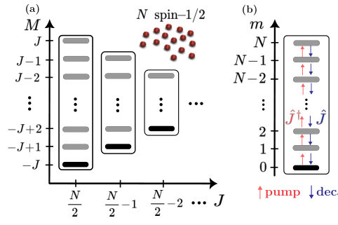
<figcaption class="paper-figure-caption"><b>Fig 1.</b> FIG. 1. Collectively pumped Dicke superradiance. (a) The Hilbert space of N spin-1/2 emitters decomposes into Dicke ladders |J, M⟩of fixed total angular momentum J. Ver- tical transitions M →M ± 1 preserve J, so that each J ladder forms an invariant dynamical subspace, remains de- coupled from all other ladders, and contains 2J + 1 states. (b) In the fully symmetric ladder J = N/2, the dynamics are restricted to the N + 1 Dicke states |m⟩, labeled by m = M + N/2 = 0, . . . , N. Collective pumping ( ˆJ†) and collective dissipation ( ˆJ) induce upward and downward transi- tions, respectively.</figcaption>
</figure>
<figure class="paper-figure-card">
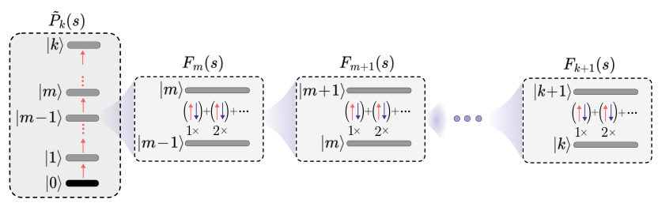
<figcaption class="paper-figure-caption"><b>Fig 2.</b> FIG. 2. Quantum-trajectory resummation. Schematic representation of the exact trajectory construction for the Laplace- transformed population Pk(s), starting from the Dicke ground state |0⟩. The direct upward trajectory |0⟩→|1⟩→· · · →|k⟩ contributes ePk(s) [Eq. (18)]. All additional trajectories are generated by inserting closed pump–decay excursions, which are resummed by the continued-fraction factors Fm(s) [Eq. (19)]. Each factor Fm(s) accounts for excursions from |m −1⟩to |m⟩ and back, including nested excursions to higher Dicke states. In particular, Fk+1(s) accounts for excursions above the final state |k⟩. Their product yields the exact population Pk(s) [Eq. (17)].</figcaption>
</figure>
</div>

<p><strong>Summary.</strong> This paper provides an exact analytical solution for the dynamics of Dicke superradiance using a novel technique based on quantum trajectories. By resumming infinite jump histories into a finite continued fraction, the authors determine the time evolution of the emitter populations. This method offers a powerful tool for analyzing complex driven-dissipative quantum systems beyond simple rate equations.</p>
<p><strong>Why it may be interesting.</strong> This work provides a powerful, exact analytical technique (continued fractions from quantum trajectories) for solving driven-dissipative quantum systems, which is highly relevant for open quantum systems research in cavity QED and quantum optics.</p>
<details>
<summary>Detailed structure</summary>
<p><strong>Main problem.</strong> The paper analytically solves the time evolution of an ensemble of N two-level emitters undergoing collective decay and incoherent pumping.</p>
<p><strong>Main result.</strong> The exact dynamics are derived by constructing a finite continued fraction representation for the Laplace-transformed state populations, providing an analytical solution across various pumping regimes.</p>
<p><strong>Method.</strong> The core method involves using quantum trajectory theory to resum infinitely many pump-decay histories into a closed-form, finite continued fraction structure in Laplace space.</p>
<p><strong>Model / system.</strong> The system is Dicke superradiance, modeled by N two-level emitters coupled symmetrically, whose dynamics are governed by a Lindblad master equation restricted to the fully symmetric Dicke ladder.</p>
<p><strong>Key observables.</strong> Dicke-state populations, collective emission rate (Iss), and the zero-delay second-order correlation function g(2)(0).</p>
<p><strong>Important parameters / regimes.</strong> The pumping rate (R), decay rate (Γ), and the number of emitters (N); the analysis focuses on the balanced point (R=Γ).</p>
<p><strong>Assumptions / limitations.</strong> The analysis assumes permutationally symmetric initial states, confining the dynamics to the fully symmetric Dicke subspace.</p>
<p><strong>Figures summary.</strong> Figure 1 illustrates the Dicke ladder decomposition, while Figure 2 schematically shows the quantum-trajectory resummation forming the continued fraction.</p>
<p><strong>Paper structure.</strong> The paper establishes the rate equations, derives the Laplace transform representation, and then develops the key result: the exact finite continued fraction by summing over quantum jump histories, followed by regime analyses (weak/strong pumping) and calculation of observables.</p>
</details>
<details>
<summary>Abstract</summary>
<p>We study the dynamics of an ensemble of $N$ two-level emitters undergoing collective decay at rate $Γ$ and collective incoherent pumping at rate $R$, confined to the fully symmetric Dicke ladder. Although the population dynamics are confined to a finite set of rate equations, their quantum-trajectory representation involves infinitely many pump-decay histories. We derive an exact finite continued fraction for the Laplace-transformed Dicke-state populations by resumming the infinitely many quantum trajectories generated by competing pump and decay processes. Our construction provides a physically transparent interpretation of the tridiagonal resolvent and extends to arbitrary permutationally symmetric initial states. In the strong- and weak-pumping regimes, we obtain perturbative transient solutions. We also identify exact relaxation eigenvalues and emission observables at balanced pump and decay strengths. Our solution provides a starting point for extending trajectory-based analytical methods to more general driven-dissipative collective systems.</p>
</details>
<p><sub><a href="#top">↑ back to top</a></sub></p>

<p><a id="paper-2610.37569"></a></p>
<h3 id="quantum-critical-scaling-in-convective-active-matter">⭐ <a href="http://arxiv.org/abs/2610.37569v1">Quantum critical scaling in convective active matter</a></h3>
<p><strong>Highlighted author(s):</strong> Jamir Marino<br>
<strong>Authors:</strong> Jamir Marino<br>
<strong>Type:</strong> theory · <strong>Category:</strong> statistical mechanics · <strong>PDF:</strong> <a href="https://arxiv.org/pdf/2610.37569v1">https://arxiv.org/pdf/2610.37569v1</a><br>
<strong>Analysis basis:</strong> full PDF text, analyzed in chunks
<strong>Topic relevance:</strong> 🔥 <code>non-equilibrium universality</code> <strong>4/5</strong> · <code>Keldysh / 2PI / non-Gaussian methods</code> <strong>3/5</strong> · <code>driven-dissipative phase transition</code> <strong>3/5</strong> · <code>correlated / nonlocal dissipation</code> <strong>1/5</strong> · <code>methods for driven-dissipative</code> <strong>1/5</strong></p>
<div class="figure-strip-hint">↔ Scroll figures horizontally</div>
<div class="paper-figures-scroll">
<figure class="paper-figure-card">
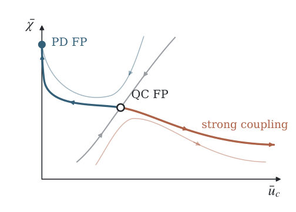
<figcaption class="paper-figure-caption"><b>Fig 1.</b> FIG. 1. Schematic RG flow projected onto the dimensionless quartic coordinate ¯𝑢𝑐and non-Gaussian-noise strength ¯𝜒. Arrows point toward longer length scales following the RG process. The QC FP is a saddle: trajectories passing near it exhibit a common critical crossover before flowing toward the PD FP or leaving the perturbative regime. At PD, the quartic Landau-Ginzburg term and both advective couplings become irrelevant, while nonlinear noise remains.</figcaption>
</figure>
<figure class="paper-figure-card">
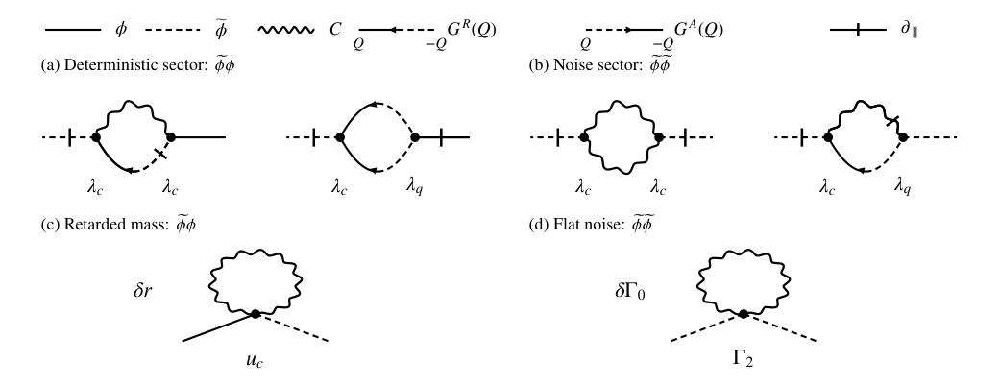
<figcaption class="paper-figure-caption"><b>Fig 2.</b> FIG. 2. One-loop corrections to the quadratic coefficients. Solid and dashed legs denote 𝜙and e𝜙, respectively. A response propagator joins a dashed half-line to a continuous half-line, with its causal arrow pointing from e𝜙to 𝜙. The symbols 𝑅, 𝐴abbreviate retarded and advanced propagators. Wavy lines denote 𝐶; a bar marks a differentiated leg. (a) The two bubbles correcting 𝐾; (b) the two bubbles correcting Γ1. Their contributions proportional to 𝜆2 𝑐and 𝜆𝑐𝜆𝑞are given in Eq. (25). (c),(d) Tadpoles proportional to 𝑢𝑐and Γ2 correct 𝑟and Γ0, respectively.</figcaption>
</figure>
<figure class="paper-figure-card">
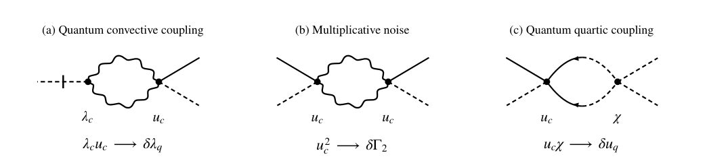
<figcaption class="paper-figure-caption"><b>Fig 3.</b> FIG. 3. Representative corrections for non-linear couplings. (a) Self-advection and the quartic nonlinearity contribute to the quantum convective coupling, renormalizing noise variance. (b) Two quartic-nonlinearity vertices generate a multiplicative-noise contribution. (c) The non-Gaussian-noise strength 𝜒contributes to the quantum quartic coupling 𝑢𝑞through 𝑢𝑐.</figcaption>
</figure>
<figure class="paper-figure-card">
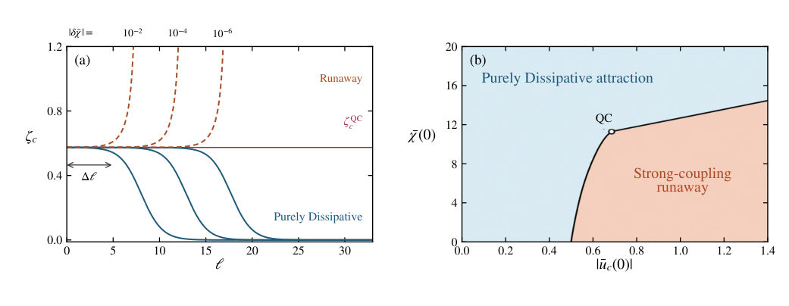
<figcaption class="paper-figure-caption"><b>Fig 4.</b> FIG. 4. QC instability and basins of attraction for 𝜖= 𝜅= 1. Blue denotes flow toward PD and orange runaway. (a) All interactions start at QC(𝑠0) except ¯𝜒(0) = ¯𝜒∗+ 𝛿¯𝜒, with |𝛿¯𝜒| = 10−2, 10−4, 10−6 from left to right. Solid blue: positive 𝛿¯𝜒shifts; dashed orange: negative 𝛿¯𝜒 shifts. The displayed RG plateau Δℓ= 4.858 is for 𝛿¯𝜒= 10−2. (b) Final attractors for initial values of (| ¯𝑢𝑐(0)|, ¯𝜒(0)) with the other four non-linear couplings set at their QC(𝑠0) values; 𝑠0 is chosen such that ¯𝜆𝑞= 0.</figcaption>
</figure>
<figure class="paper-figure-card">
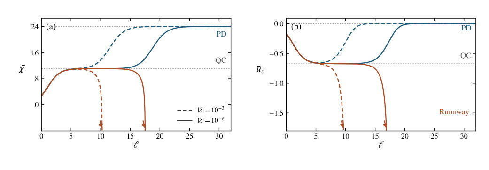
<figcaption class="paper-figure-caption"><b>Fig 5.</b> FIG. 5. Approach to and departure from QC at 𝜖= 𝜅= 1. Initial conditions are given by Eq. (62), with 𝛿= ±10−3 (dashed) and ±10−6 (solid). Positive 𝛿: blue, toward PD; negative 𝛿: orange, runaway. Panels show (a) ¯𝜒and (b) ¯𝑢𝑐; horizontal guides mark QC(𝑠0) and PD.</figcaption>
</figure>
</div>

<p><strong>Summary.</strong> This paper develops a quantum field theory for active matter exhibiting critical behavior, using renormalization group techniques. The analysis identifies a unique Quantum Convective fixed point that governs the universal scaling regime. This suggests a novel mechanism for quantum coherence to dictate universal dynamics in driven, non-equilibrium systems.</p>
<p><strong>Why it may be interesting.</strong> This work directly addresses non-equilibrium critical phenomena in active matter, using advanced field-theoretic tools (RG) to find universal scaling laws in systems far from thermal equilibrium.</p>
<details>
<summary>Detailed structure</summary>
<p><strong>Main problem.</strong> To construct a minimal field theory for critical quantum active matter and determine its universal scaling behavior under quantum fluctuations.</p>
<p><strong>Main result.</strong> The analysis reveals two fixed points—Purely Dissipative (PD) and Quantum Convective (QC)—with the QC fixed point suggesting a unique, extended scaling regime distinct from conventional hydrodynamics.</p>
<p><strong>Method.</strong> The study employs a one-loop renormalization-group (RG) analysis in $d=2-\epsilon$, analyzing the full hierarchy of correlations near the critical point.</p>
<p><strong>Model / system.</strong> The model describes a real scalar order parameter $\phi(x, t)$ for active matter, governed by an equation incorporating Landau-Ginzburg ordering, self-advection, and non-Gaussian noise.</p>
<p><strong>Key observables.</strong> Critical exponents, the scaling of the noise-to-diffusion ratio, and the survival of quantum coherence at the QC fixed point.</p>
<p><strong>Important parameters / regimes.</strong> The upper critical dimension is found to be $d_c=2$; key parameters include diffusion coefficients ($\Gamma_0, \Gamma_1$) and nonlinear coupling strengths ($\lambda_c, u_c$).</p>
<p><strong>Assumptions / limitations.</strong> The analysis relies on truncating the BBGKY hierarchy to RG relevant terms near the critical point, and the QC fixed point is treated as a saddle point governing an extended regime.</p>
<p><strong>Figures summary.</strong> Figure 1 schematically shows the RG flow projected onto dimensionless quartic and non-Gaussian noise coordinates, illustrating the QC FP as a saddle separating flows toward PD or strong coupling.</p>
<p><strong>Paper structure.</strong> The paper develops the field theory, performs the RG analysis in $d=2-\epsilon$, identifies the PD and QC fixed points, determines the critical exponents, and discusses the physical implications of the QC scaling regime.</p>
</details>
<details>
<summary>Abstract</summary>
<p>We construct a minimal field theory for critical quantum active matter, describing a nonconserved scalar order parameter with Landau-Ginzburg ordering and self-advection. When diffusive noise dominates, higher-order quantum vertices and non-Gaussian noise fluctuations remain relevant alongside the deterministic nonlinearities, with an upper critical dimension $d_c=2$. A one-loop renormalization-group analysis in $d=2-ε$ reveals a purely dissipative fixed point, where nonlinear noise suppresses convection, and a quantum convective saddle, where interactions, convection, and non-Gaussian noise coexist. We determine the critical exponents, show that the convective regime is distinct from conventional Burgers hydrodynamics, and discuss how it could govern transient universal scaling in microscopic models of quantum active matter before a crossover to semi-classical dynamics.</p>
</details>
<p><sub><a href="#top">↑ back to top</a></sub></p>

<p><a id="paper-2610.36067"></a></p>
<h3 id="diagonal-switching-and-locally-optimal-unraveling-for-efficient-quantum-trajectories-in-metastable-open-quantum-systems"><a href="http://arxiv.org/abs/2610.36067v1">Diagonal, Switching, and Locally Optimal Unraveling for efficient quantum trajectories in metastable open quantum systems</a></h3>
<p><strong>Authors:</strong> Pietro Pacchioni, Alberto Mercurio, Patrick Winkel, Fabrizio Minganti<br>
<strong>Type:</strong> theory · <strong>Category:</strong> other · <strong>PDF:</strong> <a href="https://arxiv.org/pdf/2610.36067v1">https://arxiv.org/pdf/2610.36067v1</a><br>
<strong>Analysis basis:</strong> full PDF text, analyzed in chunks
<strong>Topic relevance:</strong> 🔥 <code>methods for driven-dissipative</code> <strong>5/5</strong> · 🔥 <code>quantum measurements</code> <strong>4/5</strong> · <code>driven-dissipative phase transition</code> <strong>3/5</strong> · <code>non-equilibrium universality</code> <strong>2/5</strong> · <code>Keldysh / 2PI / non-Gaussian methods</code> <strong>1/5</strong> · <code>Tavis-Cummings &amp; cavity-many-emitter</code> <strong>1/5</strong> · <code>analog quantum simulation</code> <strong>1/5</strong> · <code>correlated / nonlocal dissipation</code> <strong>1/5</strong></p>
<div class="figure-strip-hint">↔ Scroll figures horizontally</div>
<div class="paper-figures-scroll">
<figure class="paper-figure-card">
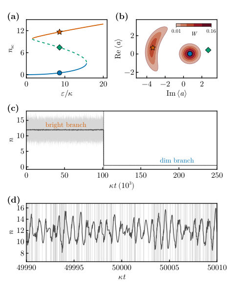
<figcaption class="paper-figure-caption"><b>Fig 1.</b> Figure 1: Characterization of the driven–dissipative Kerr resonator introduced in Sec. 2.2. (a) Number of photons according to the semiclassical solution in Eq. (8) as a func- tion of the drive ε, with the stable dim (blue) and bright (orange) branches and the unstable saddle (dashed green). The bistable window is 1.563 ≤ε/κ ≤15.670. The mark- ers indicate the working point used in the next panels. (b) Wigner function of the steady state of Eq. (7). The orange, blue and green markers indicate the position of the bright, dim, and saddle solutions of Eq. (8), respectively. (c) Photon number n(t) = ⟨ψ(t)|ˆa†ˆa|ψ(t)⟩(light gray) as a function of time for a single trajectory initialized in the...</figcaption>
</figure>
<figure class="paper-figure-card">
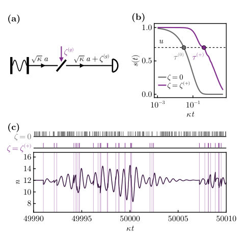
<figcaption class="paper-figure-caption"><b>Fig 2.</b> Figure 2: Dynamics of the Kerr resonator in the bright branch at the same bistable point as in Fig. 1, but in the gauge ζ = ζ(+) that minimizes the activity [see Eq. (11)]. (a) Sketch of a homodyne detection apparatus, where the cavity output field (associated with the single-photon loss jump operator √κˆa) is mixed by a beamsplitter with a coherent local os- cillator of amplitude ζ(g) prior to detection. Monitoring the resulting output port corresponds to the shifted jump operator √κˆa + ζ(g)1, i.e., the transformation described in Eq. (9). (b) Survival probability in Eq. (18) for an initial coherent state with the amplitude predicted by the semiclassical solution in Eq. (8). The dashed...</figcaption>
</figure>
<figure class="paper-figure-card">
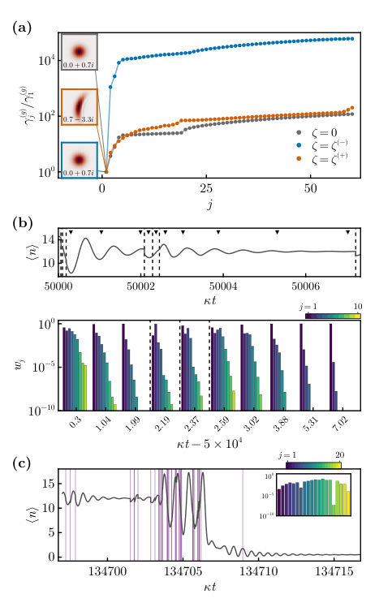
<figcaption class="paper-figure-caption"><b>Fig 3.</b> Figure 3: Properties of the spectrum and eigenvectors of the non-Hermitian Hamiltonians H(g) eff in different gauges. (a) Eigenvalue decay rates γ(g) j for the undisplaced gauge (ζ = 0) and for the two shifted ones (ζ = ζ(±)) , each normalized to its own smallest activity γ(g) 1 . Insets show the Wigner functions of the least-decaying eigenmode of each ˆH(g) eff together with their amplitudes ⟨ˆa⟩which roughly corresponds to −ζ(g). Note that these Wigner functions resemble the metastable states identifiable from Fig. 1(b). (b) Top: zoom on the dynamics in Fig. (2), i.e., a system in the bright branch evolved using the optimal gauge ζ = ζ(+), which minimizes the activity. The expectation...</figcaption>
</figure>
<figure class="paper-figure-card">
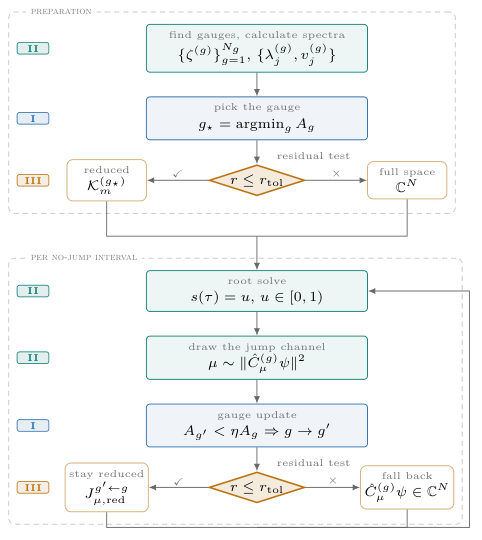
<figcaption class="paper-figure-caption"><b>Fig 4.</b> Figure 4: Schematic of the DiSLOU solver workflow. Badges on the left indicate the relevant layer. The steps labeled preparation are performed only once per evolution, while the ones labeled per no-jump interval are repeated for each no- jump evolution of each trajectory.</figcaption>
</figure>
<figure class="paper-figure-card">
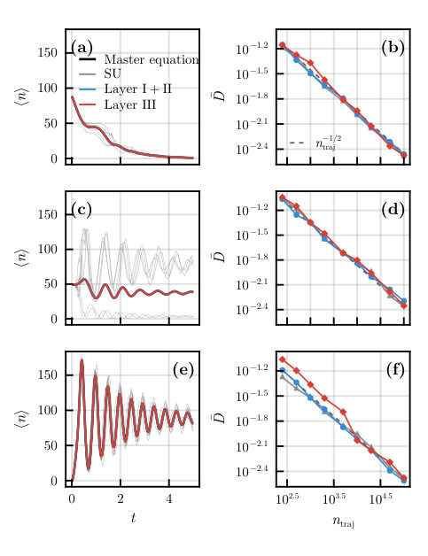
<figcaption class="paper-figure-caption"><b>Fig 5.</b> Figure 5: Accuracy and convergence for the Kerr resonator model. The rows from top to bottom refer to the dim, bistable and bright regimes, respectively. Left column, panels (a,c,e): mean photon number ⟨ˆn⟩calculated from 105 trajectories for standard unraveling (gray), Layer I+II (light blue), and Layer III (red), together with the master-equation reference (black); six trajectories appear as thin gray curves, to highlight the different behavior between the mono- and bistable regimes. Right column, panels (b,d,f): averaged trace distance D from Eq. (24) against the number of trajectories ntraj, for standard unraveling (gray triangles), Layer I+II (light blue circles), and Layer III (red...</figcaption>
</figure>
</div>

<p><strong>Summary.</strong> This paper introduces the DiSLOU method to overcome the computational bottleneck in simulating quantum trajectories within metastable open quantum systems. By combining optimal unraveling, Hamiltonian diagonalization, and subspace truncation, DiSLOU significantly accelerates simulations. It is particularly valuable for studying rare switching events in systems like driven resonators and cat-state manifolds.</p>
<p><strong>Why it may be interesting.</strong> This work provides a highly efficient numerical framework for simulating complex, non-equilibrium dynamics in open quantum systems, which is crucial for modeling quantum devices operating near multiple stable states.</p>
<details>
<summary>Detailed structure</summary>
<p><strong>Main problem.</strong> The paper addresses the computational challenge of simulating quantum trajectories in open quantum systems that exhibit metastability, where standard methods become prohibitively expensive.</p>
<p><strong>Main result.</strong> The proposed DiSLOU method achieves significant speedups (over an order of magnitude) in simulating rare switching events between metastable attractors without losing accuracy.</p>
<p><strong>Method.</strong> DiSLOU combines three layers: (i) locally optimal unraveling to minimize jumps, (ii) diagonal propagation by diagonalizing the effective Hamiltonian, and (iii) using local reduced eigenspaces to truncate the state evolution.</p>
<p><strong>Model / system.</strong> The study focuses on open quantum systems, exemplified by the driven-dissipative Kerr resonator and two-mode parametrically coupled oscillators, whose evolution is governed by a Lindblad master equation.</p>
<p><strong>Key observables.</strong> Switching statistics, quantum jump rates, and the fidelity of simulated rare events (e.g., bit-flips).</p>
<p><strong>Important parameters / regimes.</strong> Metastability timescales, jump probabilities, and the system's non-Hermitian effective Hamiltonian.</p>
<p><strong>Assumptions / limitations.</strong> The physics of interest is assumed to be dominated by the slow dynamics associated with the metastable attractors.</p>
<p><strong>Figures summary.</strong> The figures illustrate the process of a single sampled wavefunction evolution (quantum trajectory) under an effective non-Hermitian Hamiltonian, interrupted by quantum jumps.</p>
<p><strong>Paper structure.</strong> The paper introduces the problem of simulating metastable dynamics, details the limitations of standard quantum trajectory methods, and then systematically presents the three components of the DiSLOU method before benchmarking it on physical systems.</p>
</details>
<details>
<summary>Abstract</summary>
<p>Open quantum systems can display metastability, with multiple long-lived states coexisting. Examples include the bistability of bright and dim manifolds in nonlinear driven resonators, or the long-lived coherent states of opposite phases in parametrically-driven systems, the building block of cat-state-based quantum computers. Metastability often emerges at system sizes where density-matrix evolution is impractical. Quantum trajectories mitigate this issue by evolving wavefunctions rather than density matrices. Metastable states then emerge as attractors towards which the system rapidly relaxes until a rare switching event brings it to another attractor. Simulating them remains costly, as one must resolve fast intra-attractor dynamics over timescales long enough to gather switching statistics. To tackle this problem, we introduce the Diagonal, Switching, and Locally Optimal Unraveling (DiSLOU) method, which combines three optimization layers: (i) Switching among locally optimal unravelings that minimize the number of quantum jumps in each metastable region. (ii) Diagonal propagation: the no-jump evolution is accelerated by diagonalizing the non-Hermitian effective Hamiltonian once per attractor. (iii) Local reduced eigenspaces: the no-jump state can be faithfully propagated in a truncated subspace of only slowly decaying eigenmodes. We benchmark DiSLOU on the driven-dissipative Kerr resonator, finding no measurable loss of accuracy and the largest speedup in the bistable regime, where standard trajectories are most expensive. We then apply the method to the more challenging problem of accurately simulating rare bit-flip events in the cat manifold emerging in a two-mode dissipatively stabilized parametric oscillator, obtaining a performance improvement of over one order of magnitude. An implementation of DiSLOU in Julia is available as an open-source package.</p>
</details>
<p><sub><a href="#top">↑ back to top</a></sub></p>

<p><a id="paper-2610.36898"></a></p>
<h3 id="the-disordered-universe-2025-open-effective-field-theories"><a href="http://arxiv.org/abs/2610.36898v1">The Disordered Universe 2025: Open Effective Field Theories</a></h3>
<p><strong>Authors:</strong> Alessandro Fumagalli, Francesco Paronetto, Leonardo Stanzani, Mattia Varrone, Lucas Vicente García-Consuegra, Thomas Colas, Paolo Benincasa, Guilherme Leite Pimentel<br>
<strong>Type:</strong> theory · <strong>Category:</strong> statistical mechanics · <strong>PDF:</strong> <a href="https://arxiv.org/pdf/2610.36898v1">https://arxiv.org/pdf/2610.36898v1</a><br>
<strong>Analysis basis:</strong> full PDF text, analyzed in chunks
<strong>Topic relevance:</strong> 🔥 <code>Keldysh / 2PI / non-Gaussian methods</code> <strong>5/5</strong> · <code>correlated / nonlocal dissipation</code> <strong>3/5</strong> · <code>driven-dissipative phase transition</code> <strong>3/5</strong> · <code>methods for driven-dissipative</code> <strong>3/5</strong> · <code>non-equilibrium universality</code> <strong>3/5</strong> · <code>quantum measurements</code> <strong>1/5</strong></p>
<div class="figure-strip-hint">↔ Scroll figures horizontally</div>
<div class="paper-figures-scroll">
<figure class="paper-figure-card">
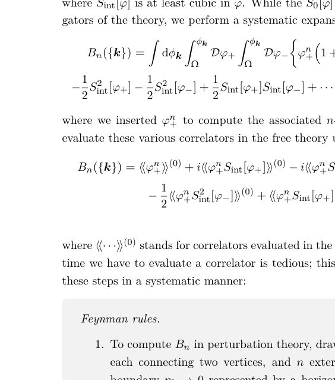
<figcaption class="paper-figure-caption"><b>Fig 1.</b> Fig. 2. Times run from bottom at η →−∞to top at η →η0.</figcaption>
</figure>
<figure class="paper-figure-card">
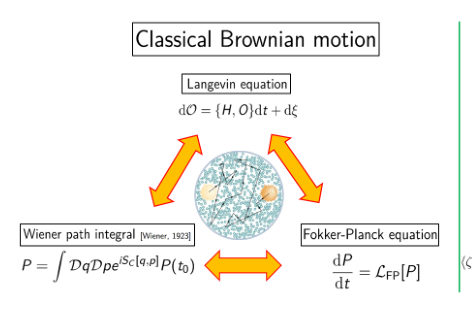
<figcaption class="paper-figure-caption"><b>Fig 2.</b> Figure 4: Classical and quantum open system correspondence. Classically, stochastic effects are</figcaption>
</figure>
<figure class="paper-figure-card">
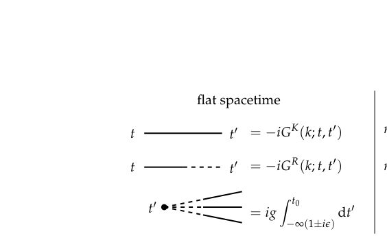
<figcaption class="paper-figure-caption"><b>Fig 3.</b> Figure 6: Feynman rules in the Keldysh basis.</figcaption>
</figure>
<figure class="paper-figure-card">
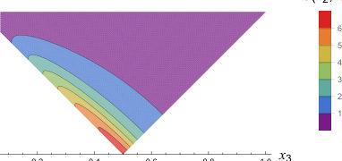
<figcaption class="paper-figure-caption"><b>Fig 4.</b> Figure 8: Shape function of the contact bispectrum generated by ˙φ3 a in Minkowski. Left: In the</figcaption>
</figure>
<figure class="paper-figure-card">
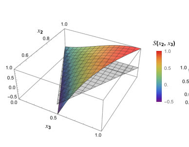
<figcaption class="paper-figure-caption"><b>Fig 5.</b> Figure 10: Shapes of the bispectrum at large dissipation γ = 5H. In this regime, the signal peaks in the</figcaption>
</figure>
</div>

<p><strong>Summary.</strong> This paper introduces Open Effective Field Theories (O-EFTs) as a necessary extension of traditional EFTs to model quantum systems interacting with unknown, noisy environments. It employs the Schwinger-Keldysh formalism to systematically calculate cosmological correlators, allowing physicists to study non-equilibrium dynamics in cosmology, such as during inflation.</p>
<p><strong>Why it may be interesting.</strong> The explicit use of the Schwinger-Keldysh formalism to model dissipation and noise in cosmological EFTs provides a powerful, general methodology for analyzing non-equilibrium quantum field theory, which is highly relevant to open quantum systems studied in AMO physics.</p>
<details>
<summary>Detailed structure</summary>
<p><strong>Main problem.</strong> The paper addresses the need for a systematic framework to model gravitational and cosmological sectors evolving in open, noisy, and dissipative environments, moving beyond traditional closed-system Effective Field Theories (EFTs).</p>
<p><strong>Main result.</strong> The Open Effective Field Theory (O-EFT) framework, utilizing the Schwinger-Keldysh formalism, provides the necessary tools to systematically capture the influence of unknown, dissipative environments on quantum field dynamics.</p>
<p><strong>Method.</strong> The core method involves using the Schwinger-Keldysh formalism to compute expectation values via a double-branch path integral, which naturally incorporates non-unitary and dissipative contributions.</p>
<p><strong>Model / system.</strong> The primary system is cosmology, specifically analyzing the dynamics of quantum fields (like a massless scalar field $\phi$) in an expanding FLRW background metric. The formalism is applied to model open quantum systems interacting with an unobservable environment.</p>
<p><strong>Key observables.</strong> Cosmological correlators (e.g., $\langle \prod b\phi(k_i) 
angle$), which are inferred from late-time observables like CMB anisotropies, and information-spreading measures like OTOCs.</p>
<p><strong>Important parameters / regimes.</strong> The analysis covers inflationary scenarios, and the framework is designed to handle dissipation and noise arising from the environment.</p>
<p><strong>Assumptions / limitations.</strong> The primary assumption is that the system's dynamics can be systematically decomposed into unitary (closed) and non-unitary (dissipative/stochastic) parts via the path integral decomposition.</p>
<p><strong>Figures summary.</strong> Figure 1 is noted to compare the single-branch path integral (for pure states) versus the double-branch path integral (for density matrices, accommodating mixed states).</p>
<p><strong>Paper structure.</strong> The notes outline a structured development: (1) Introducing the O-EFT formalism using Schwinger-Keldysh, (2) Applying it to a scalar field in curved spacetime, (3) Extending the formalism to inflationary cosmology, and (4) Generalizing the approach to gauge theories and gravity.</p>
</details>
<details>
<summary>Abstract</summary>
<p>Effective field theories (EFTs) offer a powerful method to unify diverse models under a small set of control parameters, allowing systematic expansions around well-established theories. While these techniques were traditionally developed for particle physics experiments with clean, isolated initial states, realistic macroscopic environments are often noisy and dissipative. Recognising the limitations of traditional EFTs has recently sparked intense progress at the interface of high-energy physics and condensed matter. These developments motivate a new approach to gravitation and cosmology, one that models the gravitational sector as evolving in the presence of an unobservable medium. Open Effective Field Theories provide a systematic, controllable framework for this endeavour. This chapter presents this versatile framework and illustrates how the Schwinger-Keldysh formalism captures the influence of unknown environments, manifesting as dissipation and noise, on observational probes. These notes are based on a series of lectures held during the La Ricotta Summer School "The Disordered Universe 2025" from 21 July to 1 August 2025.</p>
</details>
<p><sub><a href="#top">↑ back to top</a></sub></p>

<p><a id="paper-2610.37012"></a></p>
<h3 id="the-tempo-network-can-be-made-independent-of-the-system-size"><a href="http://arxiv.org/abs/2610.37012v1">The TEMPO network can be made independent of the system size</a></h3>
<p><strong>Authors:</strong> Valentin Link<br>
<strong>Type:</strong> theory · <strong>Category:</strong> numerical methods · <strong>PDF:</strong> <a href="https://arxiv.org/pdf/2610.37012v1">https://arxiv.org/pdf/2610.37012v1</a><br>
<strong>Analysis basis:</strong> full PDF text, analyzed in chunks
<strong>Topic relevance:</strong> 🔥 <code>methods for driven-dissipative</code> <strong>5/5</strong> · <code>correlated / nonlocal dissipation</code> <strong>2/5</strong> · <code>Keldysh / 2PI / non-Gaussian methods</code> <strong>1/5</strong> · <code>Tavis-Cummings &amp; cavity-many-emitter</code> <strong>1/5</strong> · <code>analog quantum simulation</code> <strong>1/5</strong> · <code>driven-dissipative phase transition</code> <strong>1/5</strong></p>
<div class="figure-strip-hint">↔ Scroll figures horizontally</div>
<div class="paper-figures-scroll">
<figure class="paper-figure-card">
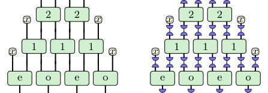
<figcaption class="paper-figure-caption"><b>Fig 1.</b> FIG. 1. (a) Graphical notation for the boundary vector x, the gate b(k) and the low-rank projector P = uuT . Bold legs describe indices with dimension d2m whereas thin legs have dimension (2m + 1)(m + 1). (b) TEMPO network as in Ref. [6], for N = 4 time steps. Applying the projector to all network bonds induces an error of O(δt2).</figcaption>
</figure>
<figure class="paper-figure-card">
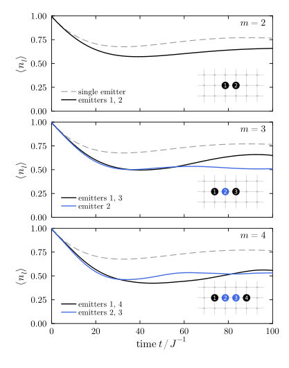
<figcaption class="paper-figure-caption"><b>Fig 2.</b> FIG. 3. Relaxation dynamics of the emitter occupation ⟨nl⟩= ⟨σ+ l σ− l ⟩for the model (10) with ωe = −4J and g2 = 0.1J2. The coupling geometry is illustrated in the insets, dashed lines show the relaxation of a single emitter. Simulations were performed using the causal TEMPO algorithm [7] at Nc = N, δt = 0.1/J with the reduced network and SVD truncation tolerances 4×10−8 (m = 2), 1.2×10−6 (m = 3) and 4×10−5</figcaption>
</figure>
<figure class="paper-figure-card">
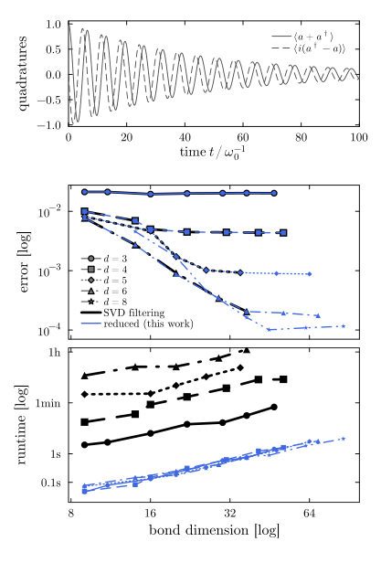
<figcaption class="paper-figure-caption"><b>Fig 3.</b> FIG. 2. Benchmark of uniTEMPO for the model (8) (η = 0.01, ωc = 3ω0) using the reduced network compared to using the full network and SVD filtering (Ref. [4]). Top: Example dynamics used to quantify the errors. Center: Error of the dynamics measured by the maximum trace norm of the dif- ference between the time-evolved system state and the exact reference. At low d errors are dominated by the Fock-space cutoff. Bottom: Runtimes reported for contracting the in- fluence functional to MPOs with different bond dimensions for δt = 0.025/ω0 on an AMD EPYC 7313 CPU (one Julia thread, two OpenBLAS threads, Julia 1.11).</figcaption>
</figure>
</div>

<p><strong>Summary.</strong> This paper introduces a significant algorithmic improvement to the Time-Evolving Matrix Product Operator (TEMPO) method for simulating open quantum systems. By exploiting a low-rank structure, the authors show that the required tensor network bond dimensions become independent of the physical system size. This breakthrough dramatically expands the accessible parameter space for studying large, complex quantum dynamics.</p>
<p><strong>Why it may be interesting.</strong> This work is highly relevant as it provides a crucial algorithmic breakthrough for simulating complex open quantum dynamics, directly addressing the computational bottleneck associated with system size in tensor network methods.</p>
<details>
<summary>Detailed structure</summary>
<p><strong>Main problem.</strong> The primary challenge is efficiently simulating non-Markovian open quantum system dynamics using the TEMPO method, which suffers from unfavorable scaling with system size in its standard tensor network representation.</p>
<p><strong>Main result.</strong> The authors demonstrate a structural reduction in the internal bond dimensions of the TEMPO network to a size independent of the system size, making large-scale simulations feasible.</p>
<p><strong>Method.</strong> The method involves exploiting a low-rank structure within the time-discretized Feynman-Vernon influence functional, allowing the bond dimensions to be reduced to $(2m+1)(m+1)$ based only on the number of coupling channels ($m$).</p>
<p><strong>Model / system.</strong> The study models open quantum systems, exemplified by a damped harmonic oscillator coupled to a bath, or multiple emitters coupled to a bosonic lattice. The dynamics are governed by the time-evolving matrix product operator (TEMPO) formalism.</p>
<p><strong>Key observables.</strong> Maximum trace norm deviation (for benchmark), and the relaxation dynamics of the emitter occupation $\langle n_l 
angle$ (for multi-channel systems).</p>
<p><strong>Important parameters / regimes.</strong> The reduction maintains the standard $O(\delta t^2)$ error order. The reduced bond dimension depends only on $m$, the number of independent coupling channels.</p>
<p><strong>Assumptions / limitations.</strong> The reduction relies on the existence of a low-rank structure within the network gates, and the error analysis confirms the preservation of the standard time-step error order.</p>
<p><strong>Figures summary.</strong> Figure 1 illustrates the gate projection process leading to bond dimension reduction. Figure 2 benchmarks the reduced network against full and SVD filtered methods for the damped oscillator. Figure 3 shows the relaxation dynamics for the multi-channel emitter model.</p>
<p><strong>Paper structure.</strong> The paper introduces the TEMPO method for open quantum systems, identifies the scaling bottleneck, and then presents the novel structural reduction technique. This technique is validated first on a benchmark (damped oscillator) and then applied to a multi-channel emitter model to demonstrate scalability.</p>
</details>
<details>
<summary>Abstract</summary>
<p>The time-evolving matrix product operator (TEMPO) method efficiently simulates non-Markovian open quantum system dynamics by contracting a two-dimensional tensor network representing the time-discretized Feynman-Vernon influence functional. The standard form of this network has an unfavorable scaling with the size of the system. We show that, within the usual second-order time-step error, the dimensions of all internal network bonds can be reduced to $(2m+1)(m+1)$, where $m$ is the number of independent coupling channels. This dimension does not depend on the number of distinct eigenvalues of the coupling operators. The system size only enters in the final boundary layer of the network, making large system sizes accessible to TEMPO methods. This structure was discovered by Claude Opus 5.5 during guided algorithm development.</p>
</details>
<p><sub><a href="#top">↑ back to top</a></sub></p>

<p><a id="paper-2610.36661"></a></p>
<h3 id="kinetic-slush-in-dissipative-rydberg-arrays"><a href="http://arxiv.org/abs/2610.36661v1">Kinetic Slush in Dissipative Rydberg Arrays</a></h3>
<p><strong>Authors:</strong> Hufeng Wen, Ya-Xin Xiang, Qun-Li Lei, Thomas Pohl, Zhengyang Bai, Yu-Qiang Ma<br>
<strong>Type:</strong> theory · <strong>Category:</strong> other · <strong>PDF:</strong> <a href="https://arxiv.org/pdf/2610.36661v1">https://arxiv.org/pdf/2610.36661v1</a><br>
<strong>Analysis basis:</strong> full PDF text, analyzed in chunks
<strong>Topic relevance:</strong> 🔥 <code>Rydberg arrays</code> <strong>4/5</strong> · 🔥 <code>analog quantum simulation</code> <strong>4/5</strong> · 🔥 <code>driven-dissipative phase transition</code> <strong>4/5</strong> · 🔥 <code>methods for driven-dissipative</code> <strong>4/5</strong> · <code>correlated / nonlocal dissipation</code> <strong>3/5</strong> · <code>non-equilibrium universality</code> <strong>3/5</strong> · <code>scars &amp; prethermalization</code> <strong>2/5</strong> · <code>Frenkel-Kontorova</code> <strong>1/5</strong> · <code>Keldysh / 2PI / non-Gaussian methods</code> <strong>1/5</strong> · <code>quantum measurements</code> <strong>1/5</strong></p>
<div class="figure-strip-hint">↔ Scroll figures horizontally</div>
<div class="paper-figures-scroll">
<figure class="paper-figure-card">
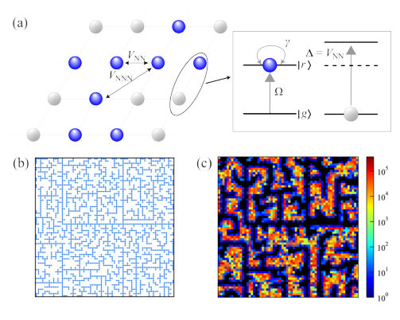
<figcaption class="paper-figure-caption"><b>Fig 1.</b> Figure 1. Model setup and frustrated Rydberg kinetics. (a) Schematic of two-level atoms on a square lattice driven by a laser with Rabi frequency Ωand detuning ∆. The condition ∆= VNN facil- itates excitation exclusively when exactly one NN is in the Rydberg state |r⟩. Under this condition, VNNN acts as a kinetic frustration that modulates the local spin-flip rate. (b) Snapshot of the steady-state spatial configuration. (c) Corresponding heatmap of local activity K j, measuring the number of spin flips at site j over an observation window T = 106. Dark-blue regions indicate low-activity, solid-like sites within the observation window, while red/yellow regions de- note highly active,...</figcaption>
</figure>
<figure class="paper-figure-card">
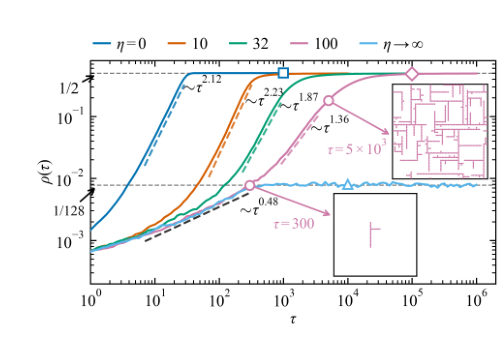
<figcaption class="paper-figure-caption"><b>Fig 2.</b> Figure 2. Dynamical relaxation under kinetic frustration. Time evolution of the Rydberg density ρ(τ) across various frustration strengths η on a 64 × 64 lattice. Solid curves denote ensemble aver- ages over 128 independent trajectories, while dashed lines show local power-law fits within the indicated time intervals. Insets display real- space snapshots of a single trajectory at τ = 300 and τ = 5000 for η = 100.</figcaption>
</figure>
<figure class="paper-figure-card">
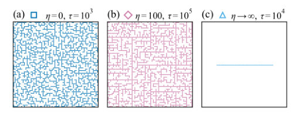
<figcaption class="paper-figure-caption"><b>Fig 3.</b> Figure 3. Spatial structure of the macroscopic steady state. (a)– (c) Steady-state spatial configurations on a 64 × 64 lattice for (a) η = 0 at τ = 103, (b) η = 100 at τ = 105, and (c) η →∞at τ = 104. The symbols in the panel titles correspond to the sampling markers in Fig. 2. The dots denote Rydberg excitations, with solid lines connecting excited nearest neighbors.</figcaption>
</figure>
<figure class="paper-figure-card">
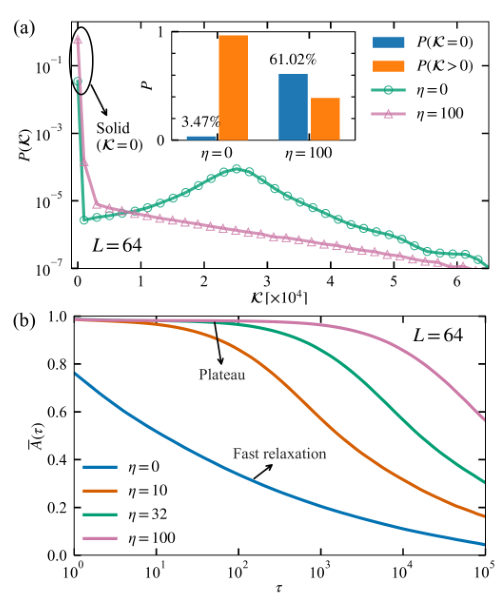
<figcaption class="paper-figure-caption"><b>Fig 4.</b> Figure 4. Spatio-temporal signatures of the kinetic slush state. (a) Local activity distribution P(K) at η = 0 and η = 100. Inset: Comparison between the fractions of sites with no observed flips (K = 0) and sites with observed flips (K &gt; 0) within the observation window; the fraction of sites with no observed flips increases from 3.47% to 61.02% as frustration is introduced. Statistics are accumu- lated over 256 independent KMC trajectories within an observation window of T = 105. (b) Site-averaged autocorrelation function ¯A(τ) for various η, showing slower relaxation with increasing η and an ex- tended plateau followed by slow decay at strong frustration.</figcaption>
</figure>
<figure class="paper-figure-card">
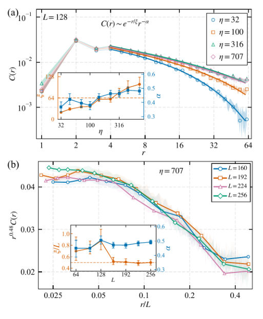
<figcaption class="paper-figure-caption"><b>Fig 5.</b> Figure 5. Spatial correlations and finite-size scaling analysis. (a) Spatial correlation function C(r) for L = 128 at different frustra- tion strengths η. Solid curves show fits to the generalized Ornstein- Zernike form. Inset: Fitted correlation length ξ (red) and exponent α (blue) versus η; the dashed line marks ξ = L/2. (b) Finite-size scal- ing of C(r) at η = 707. The rescaled correlations r0.48C(r), plotted against r/L for different system sizes L, collapse over an intermedi- ate range of scaled distances. Inset: Normalized correlation length ξ/L (red) and exponent α (blue) versus L; the dashed line marks ξ/L = 0.5. Shaded bands and error bars indicate standard errors estimated via...</figcaption>
</figure>
</div>

<p><strong>Summary.</strong> This paper explores the complex, non-equilibrium dynamics of a 'kinetic slush' phase in a 2D array of dissipative Rydberg atoms. By tuning the laser detuning and introducing kinetic frustration via next-nearest-neighbor interactions, the system exhibits a rich crossover between different growth regimes. The findings establish these driven-dissipative quantum systems as a powerful tool for engineering complex soft-matter phenomena.</p>
<p><strong>Why it may be interesting.</strong> This work provides a concrete, controllable platform (Rydberg arrays) to model complex, non-equilibrium soft-matter physics, bridging concepts from frustrated magnetism and driven-dissipative quantum dynamics.</p>
<details>
<summary>Detailed structure</summary>
<p><strong>Main problem.</strong> The study investigates the nonequilibrium dynamics of a kinetic slush state realized in a two-dimensional dissipative Rydberg atom array.</p>
<p><strong>Main result.</strong> The system exhibits a slush phase characterized by dynamical heterogeneity and a crossover from isotropic spreading to one-dimensional constrained growth, tunable by kinetic frustration.</p>
<p><strong>Method.</strong> Kinetic Monte Carlo (KMC) simulations are employed to analyze the time evolution of the system's density and spatial correlations.</p>
<p><strong>Model / system.</strong> The system is a 2D dissipative Rydberg atom array governed by a Hamiltonian including van der Waals interactions, evolving under a Lindblad master equation in the strong dephasing regime.</p>
<p><strong>Key observables.</strong> Mean Rydberg density $
ho( au)$, local activity $K_j$, generalized Ornstein-Zernike spatial correlations, and fractal dimension $d_f$.</p>
<p><strong>Important parameters / regimes.</strong> Laser detuning ($\Delta$), kinetic frustration strength ($\eta$), and the ratio of NNN coupling to dissipation ($\eta$).</p>
<p><strong>Assumptions / limitations.</strong> The analysis relies on the strong dephasing limit ($\gamma \gg \Omega$) and often truncates interactions to nearest-neighbor and next-nearest-neighbor terms.</p>
<p><strong>Figures summary.</strong> Figures illustrate the model setup, steady-state spatial configurations, local activity heatmaps, and the time evolution of the mean Rydberg density $
ho( au)$ for varying frustration strengths.</p>
<p><strong>Paper structure.</strong> The paper develops the model Hamiltonian and master equation, analyzes the dynamics in different frustration regimes ($\eta=0$, finite $\eta$, $\eta 	o \infty$), and quantifies the resulting spatial structures using correlation functions and fractal analysis.</p>
</details>
<details>
<summary>Abstract</summary>
<p>We investigate the nonequilibrium dynamics of a kinetic slush state realized via facilitated excitations in a two-dimensional dissipative Rydberg atom array. Utilizing kinetic Monte Carlo simulations in the strong dephasing regime, we show that tuning the laser detuning to compensate for nearest-neighbor interactions enables facilitated dynamics, while residual next-nearest-neighbor interactions induce kinetic frustration. This competition gives rise to an emergent slush phase characterized by pronounced dynamical heterogeneity and the coexistence of liquid- and solid-like configurations. By probing its nonequilibrium real-time evolution, we uncover a dynamical crossover from isotropic spreading to one-dimensional constrained growth, which can be continuously tuned by the frustration strength. Within this crossover regime, the slush dynamics generate fractal cluster geometries and generalized Ornstein-Zernike spatial correlations. Finite-size scaling analysis supports the system's proximity to criticality. Our findings establish driven-dissipative Rydberg systems as a highly controllable platform for engineering complex nonequilibrium soft-matter phenomena.</p>
</details>
<p><sub><a href="#top">↑ back to top</a></sub></p>

<p><a id="paper-2610.36038"></a></p>
<h3 id="emergent-fermi-surfaces-in-periodically-driven-bose-gases"><a href="http://arxiv.org/abs/2610.36038v1">Emergent Fermi Surfaces in Periodically Driven Bose Gases</a></h3>
<p><strong>Authors:</strong> Li-kun Shi, Oles Matsyshyn, Inti Sodemann Villadiego<br>
<strong>Type:</strong> theory · <strong>Category:</strong> quantum gases · <strong>PDF:</strong> <a href="https://arxiv.org/pdf/2610.36038v1">https://arxiv.org/pdf/2610.36038v1</a><br>
<strong>Analysis basis:</strong> full PDF text, analyzed in chunks
<strong>Topic relevance:</strong> 🔥 <code>analog quantum simulation</code> <strong>4/5</strong> · <code>Keldysh / 2PI / non-Gaussian methods</code> <strong>3/5</strong> · <code>driven-dissipative phase transition</code> <strong>3/5</strong> · <code>methods for driven-dissipative</code> <strong>3/5</strong> · <code>non-equilibrium universality</code> <strong>3/5</strong> · <code>scars &amp; prethermalization</code> <strong>1/5</strong></p>
<div class="figure-strip-hint">↔ Scroll figures horizontally</div>
<div class="paper-figures-scroll">
<figure class="paper-figure-card">
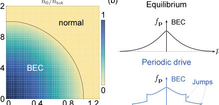
<figcaption class="paper-figure-caption"><b>Fig 1.</b> FIG. 1. (a) Condensate fraction n0/ntot as a function of bath temperature and drive amplitude. The reference scales are the undriven critical temperature kBTc/Ω= 0.3075 and the zero-temperature critical drive Ac/ √</figcaption>
</figure>
<figure class="paper-figure-card">
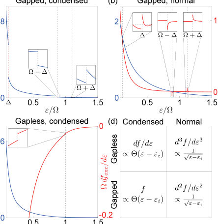
<figcaption class="paper-figure-caption"><b>Fig 2.</b> FIG. 2. Angle-averaged boson occupation fexc(ε) (blue) of bosons coupled to a gapped bath for: (a) the BEC state at kBTB/Ω= 0.05, and (b) the normal state at kBTB/Ω= 0.5, also showing is second derivative (red). (c) Angle-averaged occupation (blue) of a BEC coupled to an ohmic bath (νg = 0) at kBTB/Ω= 0.05, and its derivative (red). The driving amplitude in (a–c) is A0/ √</figcaption>
</figure>
<figure class="paper-figure-card">
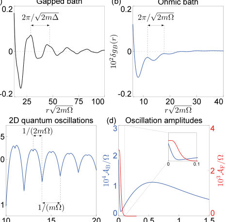
<figcaption class="paper-figure-caption"><b>Fig 3.</b> FIG. 3. (a,b) Background-subtracted density correlations δgB(r) = CB(r)/n2 tot −ˆCg/r of a 3D driven BEC for (a) gapped and (b) ohmic baths. The coefficient ˆCg is fitted to the long-distance correlation (SM Sec. C 3). The measurement direction is at arccos(1/ √</figcaption>
</figure>
</div>

<p><strong>Summary.</strong> This work demonstrates that periodically driving a Bose gas out of equilibrium can induce emergent Fermi surfaces, characterized by non-analyticities in momentum space. These signatures manifest as observable long-range oscillations in the density correlations. The findings establish non-equilibrium dynamics as a powerful route to realizing Fermi liquid physics in bosonic quantum gases.</p>
<p><strong>Why it may be interesting.</strong> It provides a concrete, non-equilibrium mechanism for generating Fermi surface physics in bosonic systems, which is a long-standing goal in the field, offering experimental pathways using ultra-cold atoms.</p>
<details>
<summary>Detailed structure</summary>
<p><strong>Main problem.</strong> The study investigates the emergence of Fermi surfaces in bosonic systems that are driven out of equilibrium by periodic forces.</p>
<p><strong>Main result.</strong> Non-equilibrium driving conditions can induce non-analyticities in the momentum occupation function, mimicking Fermi surfaces, even in weakly interacting bosons.</p>
<p><strong>Method.</strong> The analysis uses the Floquet-Boltzmann equation to model the steady-state occupation function and calculates density correlations via Fourier transforms.</p>
<p><strong>Model / system.</strong> The model is a weakly interacting Bose gas coupled to a thermal bath and subjected to a time-periodic driving force, analyzed in both BEC and normal gas regimes.</p>
<p><strong>Key observables.</strong> Non-analyticities (jumps) in the momentum occupation function $f_p$, Friedel oscillations in density correlations $C_B(r)$, and quantum oscillations in response to magnetic fields.</p>
<p><strong>Important parameters / regimes.</strong> Driving frequency ($\Omega$), bath temperature ($T_B$), and driving amplitude ($A_0$).</p>
<p><strong>Assumptions / limitations.</strong> The analysis relies on the weak coupling limit to derive the Floquet-Boltzmann equation and assumes the existence of distinct non-analytic features corresponding to Fermi surface signatures.</p>
<p><strong>Figures summary.</strong> Figures illustrate the phase diagram, schematic occupation functions comparing equilibrium vs. driven states, and the spatial decay of density correlations showing oscillatory behavior.</p>
<p><strong>Paper structure.</strong> The paper progresses by establishing the non-equilibrium framework via the Floquet-Boltzmann equation, identifying the momentum-space signatures (non-analyticities), and then calculating the corresponding real-space fingerprints (density correlations and kinetic energy oscillations).</p>
</details>
<details>
<summary>Abstract</summary>
<p>We show that the steady state of a periodically driven Bose gas coupled to a thermal bath features emergent Fermi surfaces both in its high temperature and Bose-Einstein-condensate (BEC) states. These emergent Fermi surfaces are non-analyticities in the occupation function as a function of momentum arising from the lack of detailed balance of collisions away from equilibrium. They are stronger in the BEC than in the normal gas, and can be more robust against finite temperature smearing than the usual equilibrium Fermi surfaces of Fermi gases. We also show that they give rise to analogous rich phenomena, such as Friedel oscillations in the density correlations and quantum oscillations in response to applied magnetic fields controlled by their areas, albeit with marked quantitative differences. Our results establish non-equilibrium conditions as a promising alternative pathway to achieve the long-sought-after emergence of Fermi surfaces in bosonic system. We outline strategies to experimentally discover these exotic states in ultra-cold atomic clouds.</p>
</details>
<p><sub><a href="#top">↑ back to top</a></sub></p>

<p><a id="paper-2610.37129"></a></p>
<h3 id="langevin-dynamics-towards-generalized-gibbs-ensembles"><a href="http://arxiv.org/abs/2610.37129v1">Langevin dynamics towards Generalized Gibbs Ensembles</a></h3>
<p><strong>Authors:</strong> Rafael González-Albaladejo, Leticia F. Cugliandolo, Gustavo S. Lozano, Daniel A. Stariolo<br>
<strong>Type:</strong> theory · <strong>Category:</strong> statistical mechanics · <strong>PDF:</strong> <a href="https://arxiv.org/pdf/2610.37129v1">https://arxiv.org/pdf/2610.37129v1</a><br>
<strong>Analysis basis:</strong> full PDF text, analyzed in chunks
<strong>Topic relevance:</strong> 🔥 <code>methods for driven-dissipative</code> <strong>4/5</strong> · <code>non-equilibrium universality</code> <strong>3/5</strong> · <code>scars &amp; prethermalization</code> <strong>3/5</strong> · <code>Keldysh / 2PI / non-Gaussian methods</code> <strong>2/5</strong> · <code>quantum measurements</code> <strong>2/5</strong> · <code>analog quantum simulation</code> <strong>1/5</strong> · <code>correlated / nonlocal dissipation</code> <strong>1/5</strong> · <code>driven-dissipative phase transition</code> <strong>1/5</strong></p>
<div class="figure-strip-hint">↔ Scroll figures horizontally</div>
<div class="paper-figures-scroll">
<figure class="paper-figure-card">
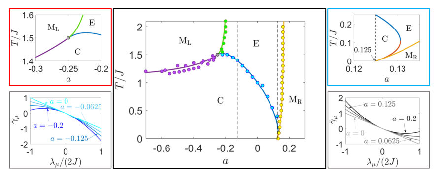
<figcaption class="paper-figure-caption"><b>Fig 1.</b> Figure 1: The full phase diagram in the (a, T/J) plane of the Generalized Neumann model HGNM = P µ ¯γµIµ with quadratic ¯γµ = aλ2 µ/J −bλµ and b = 1/2. The vertical dashed lines are situated at a = ±1/8: for a &lt; −1/8 (a &gt; 1/8), ¯γµ(λµ) has a maximum (minimum) within the interval [−2J, 2J]. There are three phases: condensed (C, with ⟨x2 N⟩/N = q ̸= 0, ⟨x2 µ̸=N⟩= O(1) and ⟨p2 µ⟩= O(1)), extended (E, with ⟨x2 µ⟩= O(1) and ⟨p2 µ⟩= O(1)) and two phases in motion (MR and ML, in which modes close to the right of the spectrum in MR and modes close to the left of the spectrum in ML increase their momentum indefinitely). The transition between the extended and condensed phase is given by Eq. (61)...</figcaption>
</figure>
<figure class="paper-figure-card">
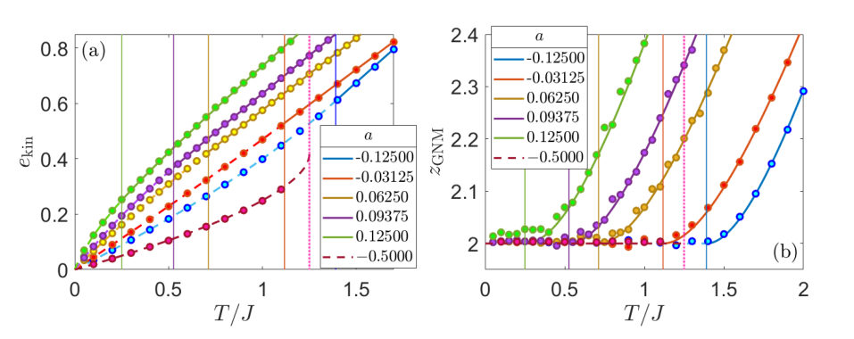
<figcaption class="paper-figure-caption"><b>Fig 2.</b> Figure 2: The (asymptotic) kinetic energy density, ekin = (2mN)−1 P µ⟨p2 µ⟩(a), and Lagrange multiplier, zGNM (b), as functions of temperature, for b = 1/2 and different values of a given in the keys. The data points stem from the numerical integration of the Langevin process, for N = 500, and are averaged over a few runs. The thin vertical lines correspond to Tc(a) towards the extended phase, given in Eq. (61) and drawn in the main central panel of Fig. 1 as a solid blue line with some numerical data points with the same blue colour. The dotted pink vertical line represents Tc(a = −0.5) = 1.25J on the violet critical line towards the moving phase ML of the phase diagram of Fig. 1. The...</figcaption>
</figure>
<figure class="paper-figure-card">
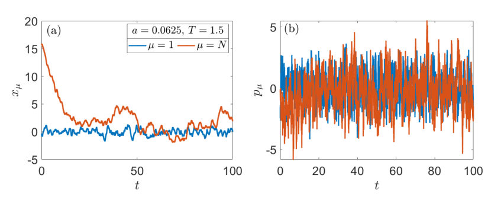
<figcaption class="paper-figure-caption"><b>Fig 3.</b> Figure 3: Typical time dependence of two coordinates (a) and two components of the momentum (b) after a quench to the extended phase.</figcaption>
</figure>
<figure class="paper-figure-card">
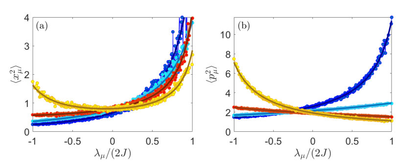
<figcaption class="paper-figure-caption"><b>Fig 4.</b> Figure 4: Mode-resolved squared positions and momenta in the extended phase, a = 0.15 (dark blue), a = 0.0625 (light blue), a = −0.0625 (red), and a = −0.19 (orange), all at T = 2. (a) Spectrum of square coordinate values, ⟨x2 µ⟩, limited to ⟨x2 µ⟩&lt; 4 to improve visualisation and (b) squared momenta components, ⟨p2 µ⟩. The asymptotic Langevin numerical data points for N = 500 are compared to the static predictions for N →∞, ⟨x2 µ⟩= ⟨p2 µ⟩/(zGNM −λµ) and ⟨p2 µ⟩, with ⟨p2 µ⟩given in Eq. (48), and ekin and zGNM replaced by their analytic expressions in Eqs. (55) and (59), respectively.</figcaption>
</figure>
<figure class="paper-figure-card">
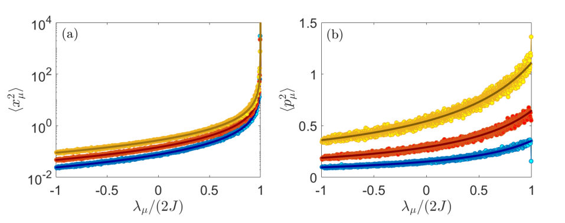
<figcaption class="paper-figure-caption"><b>Fig 5.</b> Figure 5: The spectrum of ⟨x2 µ⟩(a) and ⟨p2 µ⟩(b) for system with a = 0.09375 and N = 4000 at different temperatures, T = 0.1, 0.2, 0.4, all in the condensed phase. The data points correspond to the asymptotic (long-time limit) stochastic values obtained with condensed initial conditions at T0 = 0.5. The solid lines are the analytic predictions in Sec. 3.</figcaption>
</figure>
</div>

<p><strong>Summary.</strong> This paper introduces the use of Langevin dynamics as a powerful stochastic tool to sample the Generalized Gibbs Ensemble (GGE) measure for integrable systems. By tailoring the deterministic force, the authors show that the long-time evolution of the system samples the GGE, which is rigorously tested and confirmed using the Neumann Model. This provides a robust method for calculating non-equilibrium steady states in complex physical models.</p>
<p><strong>Why it may be interesting.</strong> This work provides a concrete, computationally accessible stochastic tool (Langevin dynamics) to calculate equilibrium properties (GGE) in complex, non-equilibrium systems, which is highly relevant for understanding relaxation dynamics in many-body quantum systems.</p>
<details>
<summary>Detailed structure</summary>
<p><strong>Main problem.</strong> The primary goal is to develop and apply a stochastic method to efficiently sample the Generalized Gibbs Ensemble (GGE) measure for integrable quantum and classical systems.</p>
<p><strong>Main result.</strong> The authors successfully demonstrate that a carefully tuned Langevin process can reproduce the asymptotic statistical averages predicted by the GGE for the Neumann Model following a quench.</p>
<p><strong>Method.</strong> The core method involves deriving the deterministic force for a Langevin process such that the long-time stochastic trajectories sample the desired GGE measure, which is shown to be equivalent to a standard Gibbs-Boltzmann measure for a modified Hamiltonian.</p>
<p><strong>Model / system.</strong> The study uses the classical Neumann Model (a particle on a sphere with anisotropic potentials) as a benchmark, extending the analysis to the Generalized Neumann Model (GNM) which incorporates multiple conserved quantities (constants of motion).</p>
<p><strong>Key observables.</strong> Asymptotic values of local observables, $\langle p^2(\lambda) 
angle$, and $\langle x^2(\lambda) 
angle$.</p>
<p><strong>Important parameters / regimes.</strong> The Lagrange multipliers ($ar{\gamma}<em>
u$) that define the GGE, and the quench protocol parameters ($\lambda</em>\mu$).</p>
<p><strong>Assumptions / limitations.</strong> The assumption that the GGE can be interpreted as a standard Boltzmann measure for a non-standard Hamiltonian, and that the Langevin process converges to this measure.</p>
<p><strong>Figures summary.</strong> Figures illustrate mode-resolved results for Langevin dynamics on the Neumann Model under different conditions relating the Lagrange multipliers ($ar{\gamma}_\mu$ vs $ar{\gamma}_N$), showing distinct dynamic regimes.</p>
<p><strong>Paper structure.</strong> The paper progresses from establishing the GGE framework for integrable systems, interpreting it as a standard Gibbs measure, developing the Langevin sampling technique, and finally applying this method to the Neumann Model, including detailed mathematical derivations for the Lagrange multipliers.</p>
</details>
<details>
<summary>Abstract</summary>
<p>In recent years, statistical physics tools have been used to study the dynamics of macroscopic quantum and classical integrable models. These studies have shown that, in the thermodynamic limit, long term time-averages of local observables equal statistical averages calculated with a Generalized Gibbs Ensemble (GGE). In the latter, the weight in phase space involves all constants of motion multiplied by Lagrange multipliers which are fixed by their initial values. We argue that the GGE can be interpreted as a proper Boltzmann measure of a different (non-standard) mechanical model. This measure can therefore be sampled with stochastic methods implemented, for example, as a Langevin process. We tailor the deterministic force in the Langevin equations so that at long times the stochastic trajectories sample the desired measure. We use the integrable Neumann Model -- the model of a classical particle constrained to move on a sphere under anisotropic harmonic potentials -- as a benchmark. We test the method in a setup where the Lagrange multipliers are fixed by the GGE governing the asymptotic dynamics of the isolated Neumann model following a quench. This problem has different phases depending on the initial conditions and quench protocol and, in all cases, with the stochastic evolution of an adequately tuned Langevin process we reproduce the asymptotic values of relevant observables.</p>
</details>
<p><sub><a href="#top">↑ back to top</a></sub></p>

<p><a id="paper-2610.36061"></a></p>
<h3 id="parity-doublet-spin-interactions-in-ultracold-polyatomic-molecules"><a href="http://arxiv.org/abs/2610.36061v1">Parity-doublet spin interactions in ultracold polyatomic molecules</a></h3>
<p><strong>Authors:</strong> Junheng Tao, Paige Robichaud, Christian Hallas, Giseok Lee, John M. Doyle<br>
<strong>Type:</strong> both · <strong>Category:</strong> other · <strong>PDF:</strong> <a href="https://arxiv.org/pdf/2610.36061v1">https://arxiv.org/pdf/2610.36061v1</a><br>
<strong>Analysis basis:</strong> full PDF text, analyzed in chunks
<strong>Topic relevance:</strong> 🔥 <code>analog quantum simulation</code> <strong>4/5</strong> · <code>Keldysh / 2PI / non-Gaussian methods</code> <strong>3/5</strong> · <code>methods for driven-dissipative</code> <strong>3/5</strong> · <code>quantum measurements</code> <strong>3/5</strong> · <code>QC/QI experiment</code> <strong>2/5</strong> · <code>correlated / nonlocal dissipation</code> <strong>1/5</strong> · <code>driven-dissipative phase transition</code> <strong>1/5</strong></p>
<div class="figure-strip-hint">↔ Scroll figures horizontally</div>
<div class="paper-figures-scroll">
<figure class="paper-figure-card">
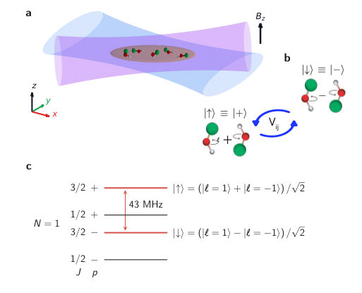
<figcaption class="paper-figure-caption"><b>Fig 1.</b> FIG. 1. Experimental setup. a Itinerant polyatomic molecules in a crossed optical dipole trap, which provides tighter confinement in z. The anisotropy enhances the OAT mean interaction strength. b The resonant dipolar exchange interaction happens between a pair of molecules that respec- tively reside in the two parity eigenstates made by superpo- sitions of opposite bending angular momentum states labeled by projections ℓ= ±1. The lab quantization axis is defined by a strong bias magnetic field along z. c The N = 1 rota- tional state diagram of ˜ X2Σ+(010) in CaOH, which contains our parity-doublet manifold. The two states that comprise our qubit system are ones of opposite parity, |+⟩and...</figcaption>
</figure>
<figure class="paper-figure-card">
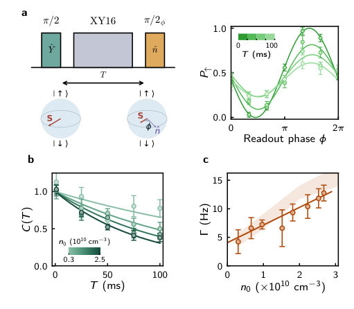
<figcaption class="paper-figure-caption"><b>Fig 2.</b> FIG. 2. Parity-doublet spin dephasing. a The Ramsey pulse sequence comprises a π/2 pulse that prepares the spin on the equator along ˆ X, and a final π/2 that reads out the pro- jection of S⊥along a certain axis ˆn defined by the pulse phase ϕ. During the interval T between these pulses, the spin system evolves under Hamiltonian (1), while dynam- ical decoupling pulses suppress the single-particle decoher- ence arising from the trap shift. On the right is an exam- ple of the measured fringes at different T indicates fast con- trast decay at 1, 25, 50, 100 ms. Error bars represent 68% confidence intervals from bootstrapping. The contrast C = S⊥(T)/S⊥(0) is extracted by fitting each Ramsey...</figcaption>
</figure>
<figure class="paper-figure-card">
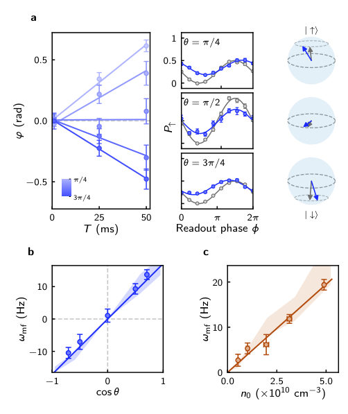
<figcaption class="paper-figure-caption"><b>Fig 3.</b> FIG. 3. Parity-doublet spin precession. a Collective spin precession phase φ as function of T for different initial angle θ. Colors from light to dark correspond to increasing θ = π/4, π/3, π/2, 2π/3, 3π/4. The initial spin is prepared by a pulse with area θ from |↑⟩, which, after time T, is rotated by the OAT interaction by azimuthal angle φ(T). Dynamical decoupling is implemented during T. We again extract φ by varying the last readout π −θ pulse phase ϕ and fitting to a sinusoidal. The middle panel presents the normalized Ramsey fringes at T = 0 (grey) and 50 ms (blue). Error bars represent 68% confidence intervals from bootstrapping. b Mean-field precession rate ωmf, extracted from...</figcaption>
</figure>
<figure class="paper-figure-card">
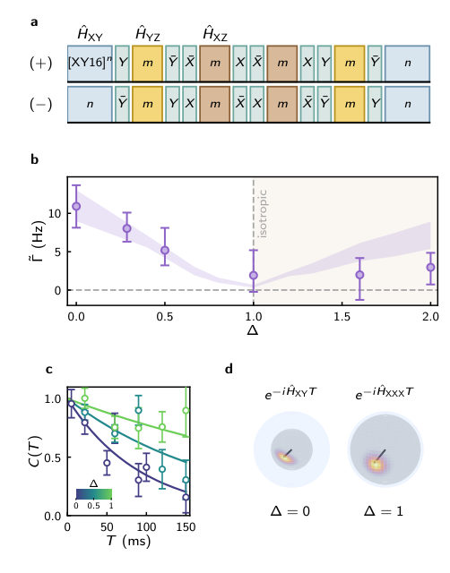
<figcaption class="paper-figure-caption"><b>Fig 4.</b> FIG. 4. Symmetry-protected collective coherence in parity- doublets. a A unit block of the Floquet pulse sequence con- tains frame-switching pulses (green) and interaction intervals (blue, yellow, and brown blocks). Here Y and ¯Y denote π/2 rotations about y and −y respectively, with BB1 compos- ite pulses. During the interaction intervals, the spin system effectively evolves under Hamiltonians ˆHAB ∝AA + BB de- pending on the frame selection. XY16 pulses are embedded within each interaction interval. The + and −cycles use op- posite frame rotations and are alternated to cancel leading- order pulse errors from the frame-switching pulses. b Engi- neered many-body dephasing rate ˜Γ as a...</figcaption>
</figure>
</div>

<p><strong>Summary.</strong> This paper reports the observation and control of resonant dipolar exchange interactions in the parity-doublet states of ultracold polyatomic molecules. By measuring both coherence decay and mean-field precession, the researchers confirmed the system's utility as a programmable, interacting quantum resource. This work advances the field by linking molecular structure to many-body physics for next-generation quantum sensors.</p>
<p><strong>Why it may be interesting.</strong> This work directly connects molecular quantum physics (polyatomic molecules) with fundamental many-body physics (dipolar interactions) in a highly controllable, programmable quantum platform relevant for quantum sensing.</p>
<details>
<summary>Detailed structure</summary>
<p><strong>Main problem.</strong> To establish parity-doublet states as a programmable, interacting degree of freedom in ultracold polyatomic molecules for enhanced precision measurements and tests of fundamental physics.</p>
<p><strong>Main result.</strong> The authors observed resonant dipolar exchange interactions and demonstrated that the system's dynamics are governed by a controllable, interacting many-body Hamiltonian, opening a route to entanglement-enhanced metrology.</p>
<p><strong>Method.</strong> The study combines experimental measurements (Ramsey decay, mean-field precession) with theoretical modeling using the Discrete Truncated Wigner Approximation (DTWA) and scattering theory.</p>
<p><strong>Model / system.</strong> The system uses ultracold $ ext{CaOH}$ molecules trapped in a crossed optical dipole trap, utilizing the parity-doublet states derived from the $\ell$-type bending vibrational mode as a pseudo-spin qubit manifold.</p>
<p><strong>Key observables.</strong> Density-dependent Ramsey contrast decay, spin-projection-dependent mean-field precession rate ($\omega_{mf}$), and the rate of many-body dephasing ($\Gamma$).</p>
<p><strong>Important parameters / regimes.</strong> The system is characterized by the anisotropic dipole-dipole interaction strength $V(\mathbf{r})$ and the ability to tune the interaction anisotropy ($\Delta$) via Floquet engineering.</p>
<p><strong>Assumptions / limitations.</strong> The dynamics are modeled using the DTWA, and scattering calculations rely on matching logarithmic derivatives at defined inner and outer boundaries.</p>
<p><strong>Figures summary.</strong> Figures illustrate the experimental setup, the geometry of the dipolar interaction, the $  ext{N}=1$ rotational state diagram, and plots showing Ramsey contrast decay versus time and density, and spin precession phase versus initial angle.</p>
<p><strong>Paper structure.</strong> The paper progresses from establishing the physical system and the role of parity doublets, to observing complementary signatures of dipolar interactions (decay and precession), and finally to demonstrating control by engineering the interaction anisotropy to find protected, interacting regimes.</p>
</details>
<details>
<summary>Abstract</summary>
<p>Precision measurements exploit internal molecular structure to search for physics beyond the Standard Model. Reaching the entanglement-enhanced regime requires preparing and preserving correlated molecular states within the same manifold used for sensing. Parity-doublet states are central to proposals for precision measurements with polyatomic molecules because they enable large molecular polarization for enhanced sensitivity, and provide internal state co-magnetometry to suppress systematic errors. Here we report the observation and control of resonant dipolar exchange interactions in a parity-doublet sensing manifold of ultracold polyatomic molecules. Using laser-cooled CaOH molecules in a crossed optical dipole trap, we encode a pseudospin in the $\ell$-type parity-doublet states and observe two complementary signatures of interactions: a density-dependent Ramsey contrast decay and a spin-projection-dependent mean-field precession whose sign reverses with the initialized population imbalance. Both observables are well described by a common discrete truncated Wigner model using independently calibrated experimental parameters. We further Floquet-engineer the interaction anisotropy and observe suppressed many-body dephasing near the SU(2)-symmetric Heisenberg point, identifying a protected regime relevant for spin squeezing and precision measurement with dense molecular ensembles. Our results establish parity doublets as a coherent, interacting, and programmable molecular degree of freedom, connecting the polyatomic precision-measurement platform to dipolar many-body physics and opening a route to entanglement-enhanced tests of fundamental physics.</p>
</details>
<p><sub><a href="#top">↑ back to top</a></sub></p>

<p><a id="paper-2610.36233"></a></p>
<h3 id="generation-of-quantum-light-with-tunable-wigner-negativity-with-a-semiconductor-quantum-dot"><a href="http://arxiv.org/abs/2610.36233v1">Generation of quantum light with tunable Wigner negativity with a semiconductor quantum dot</a></h3>
<p><strong>Authors:</strong> Hubert Lam, Petr Steindl, Yann Portella, Kiarn T. Laverick, Kian Hwee Lim, Juan R. Alvarez, Aristide Lemaitre, Maria Maffei, Alexia Auffeves, Dario A. Fioretto, Pascale Senellart<br>
<strong>Type:</strong> experiment · <strong>Category:</strong> quantum information and computing · <strong>PDF:</strong> <a href="https://arxiv.org/pdf/2610.36233v1">https://arxiv.org/pdf/2610.36233v1</a><br>
<strong>Analysis basis:</strong> full PDF text, analyzed in chunks
<strong>Topic relevance:</strong> 🔥 <code>quantum optics experiment</code> <strong>4/5</strong> · <code>QC/QI experiment</code> <strong>3/5</strong> · <code>Tavis-Cummings &amp; cavity-many-emitter</code> <strong>2/5</strong> · <code>quantum measurements</code> <strong>2/5</strong> · <code>analog quantum simulation</code> <strong>1/5</strong> · <code>driven-dissipative phase transition</code> <strong>1/5</strong> · <code>interference shaping light</code> <strong>1/5</strong> · <code>methods for driven-dissipative</code> <strong>1/5</strong></p>
<div class="figure-strip-hint">↔ Scroll figures horizontally</div>
<div class="paper-figures-scroll">
<figure class="paper-figure-card">
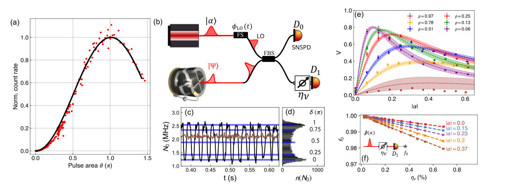
<figcaption class="paper-figure-caption"><b>Fig 1.</b> FIG. 1: (a) Normalized single-photon count rate (data points) as a function of the pulse area θ evidencing the onset of Rabi oscillations with p = sin2 θ/2 (solid line). (b) Schematic of the Wigner tomography setup: the measured field is displaced by LO on a fiber beamsplitter (FBS) with an SPNPD in each output (D0 and D1). The LO is derived from the excitation mode-locked laser and spectrally filtered with etalon-based spectral shaping; its phase ϕLO is modulated with a fiber stretcher (FS). Phase-space reconstruction is performed using zero-photon counts on D1 with variable detection efficiency ην controlled by a calibrated optical attenuator. (c) Single-photon detected count rate N0 on...</figcaption>
</figure>
<figure class="paper-figure-card">
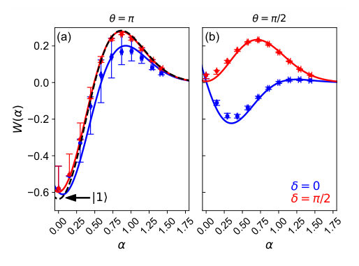
<figcaption class="paper-figure-caption"><b>Fig 2.</b> FIG. 2: Cross-sections of the reconstructed Wigner functions of the Fock superposition state √1 −p|0⟩+ √peiϕ|1⟩with (a) p = 0.97(3) (driven at θ = π) and (b) p = 0.51(1) (θ = π/2). The loss-corrected measured data (symbols) show excellent agreement with W(α) of the corresponding pure states (solid lines), in- cluding their Wigner negativity and phase-space asym- metry presented using cross-sections along two orthogo- nal phase-space directions (red δ = π/2, blue δ = 0). The asymmetry in (b) corresponds to quadrature squeezing along δ = 0 and anti-squeezing along δ = π/2. In (a), the state is compared to the perfect |1⟩(black).</figcaption>
</figure>
<figure class="paper-figure-card">
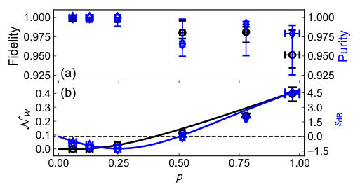
<figcaption class="paper-figure-caption"><b>Fig 3.</b> FIG. 4: Non-Gaussianity and state purity of the generated states. We quantify the Wigner negativ- ity, which is equivalent to non-Gaussianity if the state is pure [59]. (a) The reconstructed quantum state purity (blue) and its fidelity to the target vacuum-one-photon qubit (black). (b) Data points extracted from Fig. 3 quantify the photonic-qubit Wigner-negativity volume NW (black) and the quadrature squeezing parameter sdB (blue). Solid lines indicate the expected behavior for an ideal vacuum-one-photon qubit.</figcaption>
</figure>
<figure class="paper-figure-card">

<figcaption class="paper-figure-caption"><b>Fig 4.</b> FIG. 3: Propagation-loss-corrected Wigner func- tions for vacuum-one-photon superposition states √1 −p|0⟩+ √p|1⟩. (a)-(f) The point-by-point recon- structed Wigner functions W(α) for increasing single- photon population p reveal the emergence of Wigner- function negativity. Additionally, we observe a p- dependent phase-space asymmetry (better visible in the 2D plot under the 3D image), quantified in Fig. 4.</figcaption>
</figure>
<figure class="paper-figure-card">
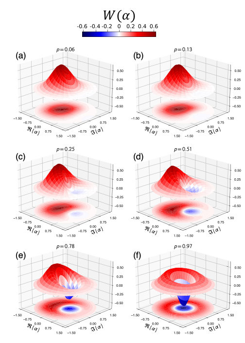
<figcaption class="paper-figure-caption"><b>Fig 5.</b> Fig. 4b reports the quantities directly linked to state nonclassicality extracted from the loss-corrected Wigner tomography. At low p, the emission quadrature vari- ance ⟨∆2xδ⟩exhibits squeezing along the δ direction, reaching at p = 0.25 the maximal quadrature squeez- ing [61] of sdB = 10 log10(4⟨∆2xδ⟩) = 1.244+0.043 −0.003 dB or 24.8+0.2 −1.0 % below the shot noise level — a value very close to the optimal of 25 % for an ideal vacuum-single- photon qubit [62, 63], reduced mostly by a small two- photon component, originating from the QD reexcitation</figcaption>
</figure>
</div>

<p><strong>Summary.</strong> This research demonstrates the generation and characterization of Wigner-negative quantum light states using a semiconductor quantum dot in a cavity. By controlling the excitation pulse, the authors tune the non-Gaussianity of the emitted light, achieving high fidelity and purity. This work presents a promising, scalable solid-state source for continuous-variable quantum computation.</p>
<p><strong>Why it may be interesting.</strong> This work provides a concrete, solid-state platform for generating non-Gaussian quantum states, which are crucial resources for advancing continuous-variable quantum information processing, bridging fundamental quantum optics with mature semiconductor technology.</p>
<details>
<summary>Detailed structure</summary>
<p><strong>Main problem.</strong> The paper addresses the need for high-quality quantum resources for continuous-variable optical quantum computing, specifically focusing on generating Wigner-negative states of light.</p>
<p><strong>Main result.</strong> The authors successfully generated Wigner-negative states with tunable negativity using a semiconductor quantum dot, achieving fidelities and purities above 95% alongside near-optimal quadrature squeezing.</p>
<p><strong>Method.</strong> The quantum states were characterized using Wigner tomography, which involved measuring the zero-photon detection probability across varying local oscillator phases and strengths.</p>
<p><strong>Model / system.</strong> The physical system is a single semiconductor quantum dot embedded in an optical cavity, driven by coherent laser pulses to create a quantum superposition of zero and one photon.</p>
<p><strong>Key observables.</strong> Wigner function negativity ($N_W$), state fidelity, quantum purity, and quadrature squeezing ($s_{dB}$).</p>
<p><strong>Important parameters / regimes.</strong> The tunability parameter $p$ (related to the pulse area $    heta$), and the detection efficiency $\eta_
u$.</p>
<p><strong>Assumptions / limitations.</strong> The reconstruction of the density matrix requires correcting for optical losses up to the solid-state device, and the analysis neglects the two-photon component of the QD emission.</p>
<p><strong>Figures summary.</strong> Figures illustrate Rabi oscillations, the Wigner tomography setup, single-photon count rates, and reconstructed Wigner functions showing negativity for varying single-photon populations.</p>
<p><strong>Paper structure.</strong> The paper details the experimental setup, the theoretical framework for Wigner tomography, the measurement protocols using the QD, and presents quantitative results demonstrating the tunability and high quality of the generated non-Gaussian quantum states.</p>
</details>
<details>
<summary>Abstract</summary>
<p>Wigner-negative states of light are key resources for quantum advantage in continuous-variable optical quantum computing. They can be produced probabilistically via frequency conversion and photon detection, or deterministically by exploiting the single-photon nonlinearity of a quantum emitter. Here, we generate such Wigner-negative states of light with a tunable negativity using a single semiconductor quantum dot in a cavity. Optical coherent control of the quantum-dot transition allows to generate a quantum superposition of zero and one photon. The generated quantum states are characterized point-by-point in the phase space through homodyne measurement. The emergence of Wigner-function negativity is observed as the excitation power is increased. After correcting for collection and propagation losses, we obtain fidelities to the ideal state and quantum purities above 95%, together with near-optimal quadrature squeezing. The ability to generate a wide variety of Wigner-negative states with mature semiconductor technology opens promising opportunities for continuous-variable optical quantum technologies.</p>
</details>
<p><sub><a href="#top">↑ back to top</a></sub></p>

<p><a id="paper-2610.36528"></a></p>
<h3 id="measurement-induced-entanglement-phases-in-hyperbolic-gauge-higgs-models"><a href="http://arxiv.org/abs/2610.36528v1">Measurement-induced entanglement phases in hyperbolic gauge-Higgs models</a></h3>
<p><strong>Authors:</strong> Cole Kelson-Packer, Hiroki Sukeno, Akimasa Miyake<br>
<strong>Type:</strong> theory · <strong>Category:</strong> statistical mechanics · <strong>PDF:</strong> <a href="https://arxiv.org/pdf/2610.36528v1">https://arxiv.org/pdf/2610.36528v1</a><br>
<strong>Analysis basis:</strong> full PDF text, analyzed in chunks
<strong>Topic relevance:</strong> 🔥 <code>quantum measurements</code> <strong>4/5</strong> · <code>analog quantum simulation</code> <strong>2/5</strong> · <code>driven-dissipative phase transition</code> <strong>2/5</strong> · <code>methods for driven-dissipative</code> <strong>2/5</strong> · <code>non-equilibrium universality</code> <strong>2/5</strong> · <code>Full counting statistics</code> <strong>1/5</strong> · <code>correlated / nonlocal dissipation</code> <strong>1/5</strong></p>
<div class="figure-strip-hint">↔ Scroll figures horizontally</div>
<div class="paper-figures-scroll">
<figure class="paper-figure-card">
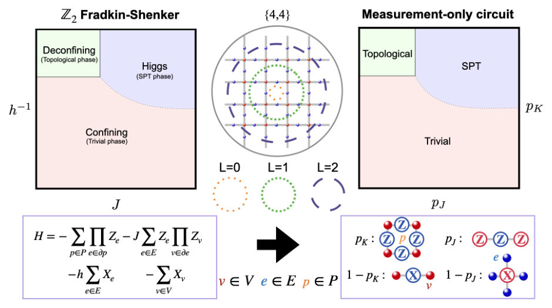
<figcaption class="paper-figure-caption"><b>Fig 1.</b> FIG. 1. Idealized phase diagrams of the Z2 Fradkin-Shenker model (left) [15, 19] and a gauge-Higgs measurement-only circuit (right) [20]. The bottom depicts the Hamiltonian and measurements considered in each respective model. The dashed lines indicate that a boundary transition separates the confined/trivial and Higgs/SPT phases. At the top center is a {4, 4} lattice with up to L = 2 layers and rough boundaries.</figcaption>
</figure>
<figure class="paper-figure-card">
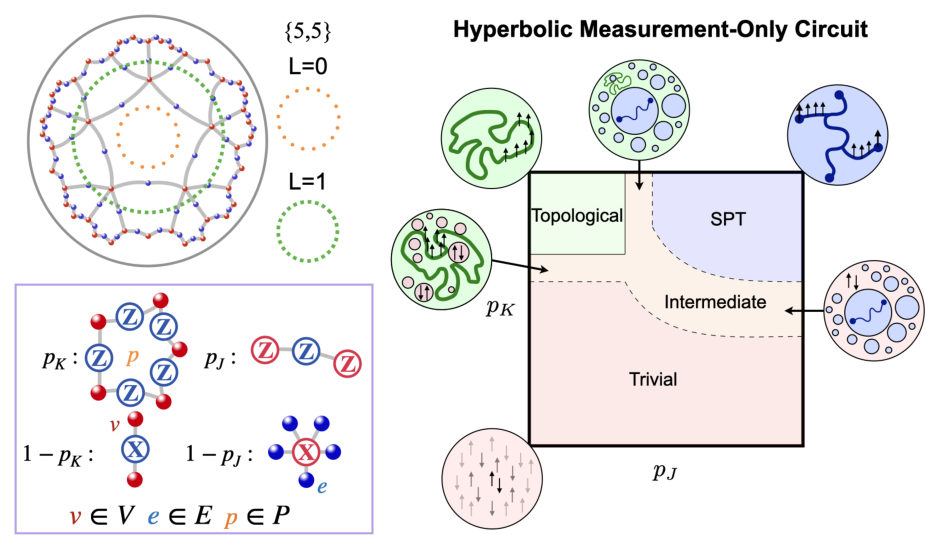
<figcaption class="paper-figure-caption"><b>Fig 2.</b> FIG. 2. Cartoon of a hyperbolic MOC. The idealized phase diagram (right) contains labels and depictions of each phase. A full intermediate phase replaces the critical line in Euclidean space. The left depicts a {5, 5} lattice with up to L = 1 layers and smooth boundaries, along with probabilistically measured stabilizers. Our diagnostics detect the boundary transition between SPT and trivial phases at the future temporal – rather than spatial – boundary. The spins in the bubbles representing different phases reflect the spatial correlation of measurement outcomes. Measurements in the trivial phase are uncorrelated, but positively correlated along loops and lines in the topological and SPT...</figcaption>
</figure>
<figure class="paper-figure-card">
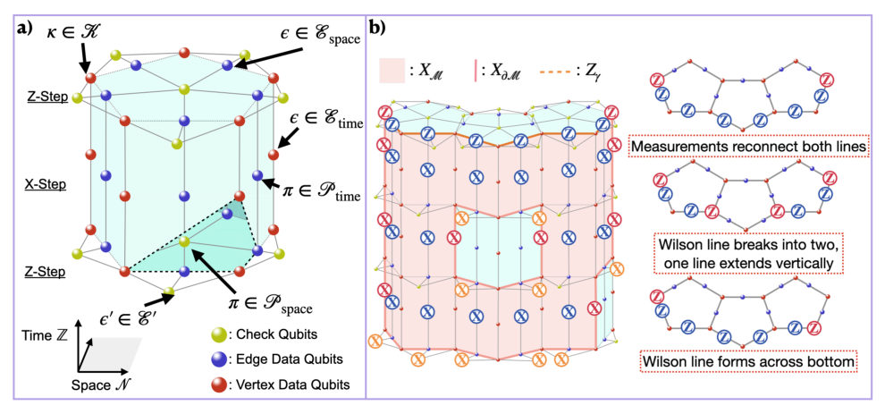
<figcaption class="paper-figure-caption"><b>Fig 3.</b> FIG. 3. Drawings of an MBQC resource cell for an MOC for N = {5, 5} (a) and a spacetime sponge (b). A P-gon replaces the top and bottom plaquettes of the cell for general {P, Q}. The full resource glues cells together such that a slice of the Z-timestep resembles {P, Q}. The spacetime sponge M is shown as an operator OM shaded red with labeled components XM, X∂M, and Zγ compatible with the measurement history {Pres}. To the right, from bottom to top, is a corresponding Wilson line’s simulated time evolution.</figcaption>
</figure>
<figure class="paper-figure-card">
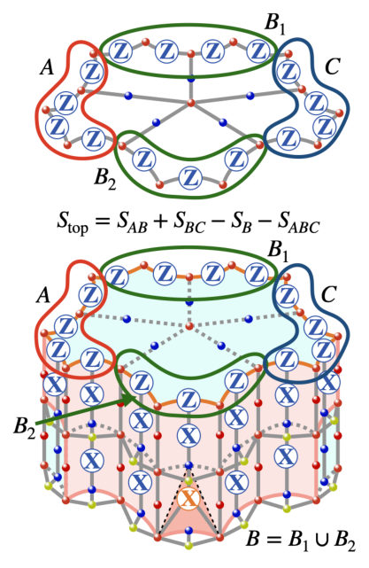
<figcaption class="paper-figure-caption"><b>Fig 4.</b> FIG. 4. Illustration of a Wilson loop operator contributing to Stop for the parties A, B, and C, shown in terms of the 2D simulated state (top) and 3D resource (bottom). Both edges and vertices are included in the A, B and C. In line with [22], we split an annulus in the lattice into quadrants, with two opposite regions given to A and C, and the remainder given to B = B1 ∪B2.</figcaption>
</figure>
<figure class="paper-figure-card">
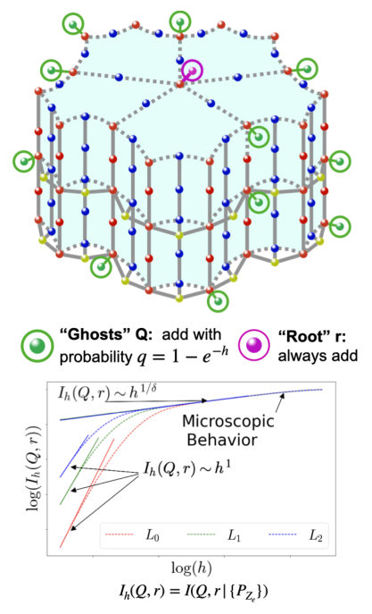
<figcaption class="paper-figure-caption"><b>Fig 5.</b> FIG. 6. Illustration of the ghost connectivity Ih(Q, r). We randomly entangle resource vertices with ghost qubits Q (cir- cled in green) and the fixed root r. The ghost connectivity Ih(Q, r) is nonzero if a sponge connects Q and r. The typi- cal behavior of Ih(Q, r) is depicted, showing how δ must be extracted from intermediate values of log(h) to avoid nonuni- versal and finite-size effects.</figcaption>
</figure>
</div>

<p><strong>Summary.</strong> This paper analyzes entanglement phases in gauge-Higgs models on hyperbolic lattices using measurement-only dynamics. By simulating spacetime evolution via a 3D resource state, the authors map out 2D phase diagrams, predicting a unique 'archipelago' phase absent in flat space. This work provides a powerful link between quantum information theory and the study of topological order in strongly correlated systems.</p>
<p><strong>Why it may be interesting.</strong> The work connects concepts from quantum information (MBQC, resource states) directly to condensed matter phenomena (topological order, phase transitions) in a non-trivial geometric setting (hyperbolic space), offering new tools for understanding entanglement structure.</p>
<details>
<summary>Detailed structure</summary>
<p><strong>Main problem.</strong> The study investigates the entanglement phases of gauge-Higgs models when placed on hyperbolic lattices, specifically focusing on entanglement transitions driven by non-commuting measurements.</p>
<p><strong>Main result.</strong> The research predicts a novel 'archipelago' phase, absent in Euclidean space, where separated clusters of Symmetry-Protected Topological (SPT) order exist, and transitions into this phase follow a mean-field universality class.</p>
<p><strong>Method.</strong> The authors employ measurement-only dynamics (MOCs) simulated using a 3D resource state inspired by measurement-based quantum computation to chart 2D phase diagrams.</p>
<p><strong>Model / system.</strong> The system is a gauge-Higgs model defined on hyperbolic lattices, analyzed via measurement-only dynamics involving random circuits alternating between Z and X measurements.</p>
<p><strong>Key observables.</strong> Topological entanglement entropy, generalized measurement-induced entanglement, Von Neumann entropy, and the detection of Wilson lines/loops to characterize topological order.</p>
<p><strong>Important parameters / regimes.</strong> Measurement probabilities ($p_J, p_K$), lattice structure defined by Schläfli symbols $\{P, Q\}$, and critical exponents ($\delta$).</p>
<p><strong>Assumptions / limitations.</strong> The analysis assumes a correspondence between $Z_2$ Euclidean lattice field theory path integrals and imaginary-time evolutions, and that entanglement entropies are independent of specific measurement outcomes.</p>
<p><strong>Figures summary.</strong> Figures illustrate idealized phase diagrams for both Euclidean and hyperbolic settings, showing the predicted intermediate 'archipelago' phase in the hyperbolic case, and diagrams detailing the foliated resource state construction.</p>
<p><strong>Paper structure.</strong> The paper builds from defining the physical system (gauge-Higgs on hyperbolic lattices) to detailing the simulation method (3D resource state/MBQC), mapping observables (entropy, Wilson loops) to phases (trivial, topological, SPT), and finally presenting the key results regarding the unique hyperbolic phase diagram.</p>
</details>
<details>
<summary>Abstract</summary>
<p>Gauge-Higgs theory in flat spacetime provides a prime theoretical model of multiple phases of matter with distinct entanglement structures. More recently, there has been interest in hyperbolic space and the influence its extensive boundaries have on these structures. Entanglement transitions between non-equilibrium phases, such as topological phases, can be realized by the competition of non-commutating measurements. Here we study the entanglement phases of gauge-Higgs models on hyperbolic lattices described by measurement-only dynamics. We chart 2D phase diagrams by employing topological entanglement entropy and introducing a generalized measurement-induced entanglement tailored for hyperbolic Higgs phases. Utilizing duality, we find a phase absent in Euclidean space, wherein the bulk lattice hosts separated clusters of symmetry-protected topological order. Transitions between this "archipelago" phase and neighboring topological and trivial phases feature a critical exponent $δ$ belonging to a mean-field universality class. Our essential tool is a 3D resource state inspired by measurement-based quantum computation that simulates the spacetime evolution of the 2D quantum state with a third direction of entanglement. This allows us to analyze spacetime "sponges" of entanglement, which map to classical percolation theory and allow us to infer values of critical points on our phase diagrams' boundaries.</p>
</details>
<p><sub><a href="#top">↑ back to top</a></sub></p>

<p><a id="paper-2610.36521"></a></p>
<h3 id="anomalous-structures-of-fisher-zero-lines-in-biorthogonal-dynamical-quantum-phase-transitions"><a href="http://arxiv.org/abs/2610.36521v1">Anomalous Structures of Fisher Zero Lines in Biorthogonal Dynamical Quantum Phase Transitions</a></h3>
<p><strong>Authors:</strong> Wen-Hui Nie, Chong Li, Lin-Cheng Wang<br>
<strong>Type:</strong> theory · <strong>Category:</strong> statistical mechanics · <strong>PDF:</strong> <a href="https://arxiv.org/pdf/2610.36521v1">https://arxiv.org/pdf/2610.36521v1</a><br>
<strong>Analysis basis:</strong> full PDF text, analyzed in chunks
<strong>Topic relevance:</strong> 🔥 <code>driven-dissipative phase transition</code> <strong>4/5</strong> · <code>non-equilibrium universality</code> <strong>3/5</strong> · <code>Keldysh / 2PI / non-Gaussian methods</code> <strong>2/5</strong> · <code>methods for driven-dissipative</code> <strong>2/5</strong> · <code>analog quantum simulation</code> <strong>1/5</strong> · <code>correlated / nonlocal dissipation</code> <strong>1/5</strong></p>
<div class="figure-strip-hint">↔ Scroll figures horizontally</div>
<div class="paper-figures-scroll">
<figure class="paper-figure-card">
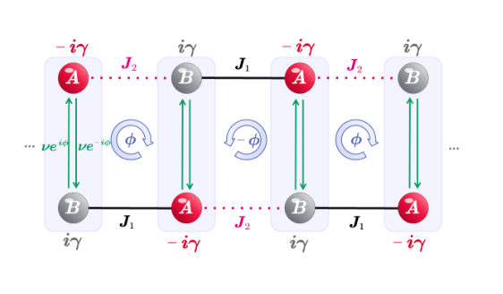
<figcaption class="paper-figure-caption"><b>Fig 1.</b> Figure 1. The ladder lattice of the generalized non-Hermitian SSH model with a Peierls phase and gain and loss. The green arrows represent the intracell hoppings ve±iϕ, while the black solid and pink dashed lines denote the real intercell couplings J1 and J2, respectively. The blue circular arrows represent synthetic gauge fields with opposite directions in adjacent pla- quettes, allowing the Peierls phase ϕ to be controlled. The on-site potentials −iγ and iγ on sites A and B describe bal- anced loss and gain.</figcaption>
</figure>
<figure class="paper-figure-card">
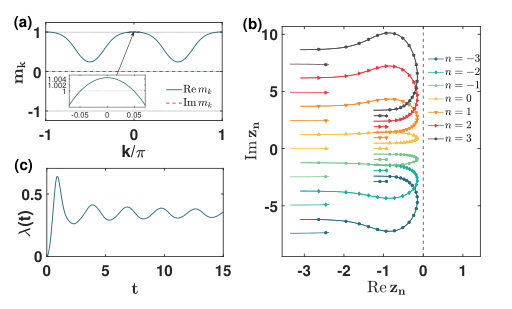
<figcaption class="paper-figure-caption"><b>Fig 2.</b> Figure 3. Results for the UU quench from (ϕi, γi) = (0, 0.2) to (ϕf, γf) = (π, 0.2). (a) The real and imaginary parts of mk as functions of k, where the blue solid and red dashed lines denote Re mk and Im mk, respectively. (b) Fisher zeros zn(k) in the complex time plane for different n, with different col- ors and symbols representing different branches. The vertical dashed line marks Re z = 0. (c) The rate function λ(t) as a function of time t.</figcaption>
</figure>
<figure class="paper-figure-card">
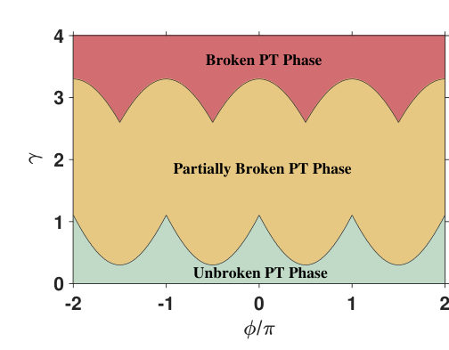
<figcaption class="paper-figure-caption"><b>Fig 3.</b> Figure 2. PT phase diagram in the (ϕ, γ) plane for v = 1, J1 = 1.8, and J2 = 0.5. The green, yellow, and red regions denote the unbroken, partially broken, and broken PT phases, respectively.</figcaption>
</figure>
<figure class="paper-figure-card">
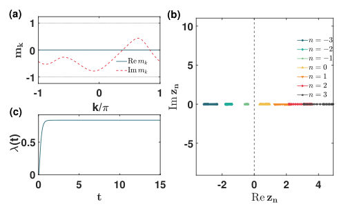
<figcaption class="paper-figure-caption"><b>Fig 4.</b> Figure 4. Results for the UB quench from (ϕi, γi) = (0, 0.5) to (ϕf, γf) = (0.5π, 3.5). (a) The real and imaginary parts of mk as functions of k, where the blue solid and red dashed lines denote Re mk and Im mk, respectively. (b) Fisher zeros zn(k) in the complex time plane for different n, with different colors and symbols representing different branches. The ver- tical dashed line marks Re z = 0. (c) The rate function λ(t) as a function of time t.</figcaption>
</figure>
<figure class="paper-figure-card">

<figcaption class="paper-figure-caption"><b>Fig 5.</b> Figure 5. Results for the BU quench from (ϕi, γi) = (π, 3.5) to (ϕf, γf) = (−π, 0.5). (a) The real and imaginary parts of mk as functions of k, where the blue solid and red dashed lines denote Re mk and Im mk, respectively. (b) Fisher zeros zn(k) in the complex time plane for different n, with different colors and symbols representing different branches. The ver- tical dashed line marks Re z = 0. (c) The rate function λ(t) as a function of time t.</figcaption>
</figure>
</div>

<p><strong>Summary.</strong> This theoretical work analyzes the complex structures of Fisher zero lines in non-Hermitian systems undergoing dynamical quantum phase transitions. By utilizing the biorthogonal framework, the authors determine critical momentum conditions based on the overlap of pre- and post-quench Bloch vectors. This provides a robust diagnostic tool for identifying nonanalyticities in the system's rate function.</p>
<p><strong>Why it may be interesting.</strong> The connection between the geometry of zeros in the complex time plane and nonanalyticities in the rate function provides a powerful, general diagnostic tool for identifying non-equilibrium phase transitions in complex quantum systems.</p>
<details>
<summary>Detailed structure</summary>
<p><strong>Main problem.</strong> The paper investigates the anomalous structures of Fisher zero lines in the complex time plane associated with Biorthogonal Dynamical Quantum Phase Transitions (DQPTs).</p>
<p><strong>Main result.</strong> The anomalous structures of these zero lines, determined by the overlap parameter $m_k$, reveal the critical momentum conditions for DQPTs, even when standard formulas fail at exceptional points.</p>
<p><strong>Method.</strong> The analysis employs the biorthogonal framework to study the Loschmidt amplitude in the complex time plane, introducing the density of Fisher zeros to characterize nonanalyticities in the rate function.</p>
<p><strong>Model / system.</strong> The study is primarily based on non-Hermitian quenches, exemplified by a generalized non-Hermitian Su-Schrieffer-Heeger (SSH) model, analyzing the dynamics using Bloch vectors.</p>
<p><strong>Key observables.</strong> Fisher zeros ($z_n$), the overlap parameter $m_k = \hat{\mathbf{h}}_0\cdot\hat{\mathbf{h}}_1$, and the rate function $\lambda(t)$ or its density $
ho(t)$.</p>
<p><strong>Important parameters / regimes.</strong> The overlap parameter $m_k$, the Peierls phase ($\phi$), and the non-Hermitian gain-loss strength ($\gamma$).</p>
<p><strong>Assumptions / limitations.</strong> The analysis relies on the biorthogonal framework, and special care must be taken at exceptional points where the standard Fisher zero formula is inapplicable.</p>
<p><strong>Figures summary.</strong> Figures illustrate the dependence of $m_k$ on momentum $k$, the resulting complex trajectories of Fisher zeros $z_n(k)$, and the corresponding rate function $\lambda(t)$ or its density $
ho(t)$ versus time or momentum.</p>
<p><strong>Paper structure.</strong> The paper systematically analyzes the complex structure of the Fisher zeros based on the value of $m_k$ (real, purely imaginary, or complex), derives critical conditions from the real-time axis crossing, and verifies these findings using the SSH model and the Jordan form near exceptional points.</p>
</details>
<details>
<summary>Abstract</summary>
<p>Fisher zero lines of the Loschmidt amplitude in non-Hermitian quenches can exhibit anomalous structures in the complex time plane, such as divergence, separation, and the restriction of all branches or a specific branch to the real or imaginary axis. Here, we use the biorthogonal framework to reveal the origin of these structures and determine the corresponding critical momentum conditions by analyzing the values of $m_k=\hat{\mathbf{h}}_0\cdot\hat{\mathbf{h}}_1$, the dot product between the normalized prequench and postquench complex Bloch vectors. When Fisher zeros continuously cover the real-time axis, the density of Fisher zeros is further introduced to identify the critical times within these critical regions, at which the rate function becomes nonanalytic. We verify our results in a generalized non-Hermitian SSH model by quenching the Peierls phase and the non-Hermitian gain-loss strength, and also use the Jordan form to analyze the dynamics at postquench exceptional points, where the conventional Fisher zero formula is not applicable.</p>
</details>
<p><sub><a href="#top">↑ back to top</a></sub></p>

<p><a id="paper-2610.36984"></a></p>
<h3 id="quantum-evolution-kernel-for-node-attributed-graphs"><a href="http://arxiv.org/abs/2610.36984v1">Quantum Evolution Kernel for Node-Attributed Graphs</a></h3>
<p><strong>Authors:</strong> Manuel Padovani, Alessandra Di Pierro, Claudia Daffara<br>
<strong>Type:</strong> both · <strong>Category:</strong> quantum information and computing · <strong>PDF:</strong> <a href="https://arxiv.org/pdf/2610.36984v1">https://arxiv.org/pdf/2610.36984v1</a><br>
<strong>Analysis basis:</strong> full PDF text, analyzed in chunks
<strong>Topic relevance:</strong> 🔥 <code>Rydberg arrays</code> <strong>4/5</strong> · <code>QC/QI experiment</code> <strong>3/5</strong> · <code>analog quantum simulation</code> <strong>3/5</strong> · <code>quantum measurements</code> <strong>2/5</strong></p>
<div class="figure-strip-hint">↔ Scroll figures horizontally</div>
<div class="paper-figures-scroll">
<figure class="paper-figure-card">

<figcaption class="paper-figure-caption"><b>Fig 1.</b> Figure 1: The picture shows the pipeline from the raw image to the final graph encodable onto the quantum device.</figcaption>
</figure>
<figure class="paper-figure-card">

<figcaption class="paper-figure-caption"><b>Fig 2.</b> Figure 2: Bayesian optimization of the evolution parameter t using the validation F1- score (80% training, 20% validation) on a 200-sample subset of the MNIST dataset. The optimal value is t = 240.1 ns (highlighted). For small t, the system does not generate sufficient entanglement, yielding low F1-score. For large t, long excitations cause oscilla- tions between entangled states, leading to a sharp drop.</figcaption>
</figure>
<figure class="paper-figure-card">

<figcaption class="paper-figure-caption"><b>Fig 3.</b> Figure 3: Comparison of the performances of different distance metrics. Wasserstein achieves the highest accuracy. Shaded regions indicate ±1 standard deviation over 5 seeds.</figcaption>
</figure>
<figure class="paper-figure-card">

<figcaption class="paper-figure-caption"><b>Fig 4.</b> Fig. 4 compares our quantum kernel (Wasserstein distance with sum aggregation) against classical baselines. The GCN achieves the highest mean accuracy, as expected. Among the WL kernels, the combined positional-angle variant performs best, slightly exceeding the mean accuracy of our quantum kernel. However, our quantum kernel matches the</figcaption>
</figure>
<figure class="paper-figure-card">

<figcaption class="paper-figure-caption"><b>Fig 5.</b> Figure 4: Comparison of our quantum kernel against classical baselines. The GCN achieves the highest accuracy, while our quantum kernel performs comparably to the po- sitional WL variant and outperforms both angle-only and featureless WL kernels. Shaded regions indicate ±1 standard deviation over 5 seeds.</figcaption>
</figure>
</div>

<p><strong>Summary.</strong> This work presents a quantum kernel method to encode node-attributed graphs onto neutral-atom quantum computers for classification. It extends previous quantum evolution kernels by incorporating node features via local Raman laser pulses in a three-level system. The authors demonstrate that using the Wasserstein distance yields strong results, benchmarking the quantum approach against state-of-the-art classical graph neural networks.</p>
<p><strong>Why it may be interesting.</strong> It directly applies advanced quantum simulation techniques (Rydberg interactions, local rotations) to a complex data structure (graphs) using quantum machine learning concepts, bridging AMO hardware capabilities with quantum information theory.</p>
<details>
<summary>Detailed structure</summary>
<p><strong>Main problem.</strong> The paper addresses the challenge of embedding node-attributed graphs onto neutral-atom quantum computers for classification tasks like digit recognition.</p>
<p><strong>Main result.</strong> The proposed quantum kernel method, utilizing the Wasserstein distance, achieves competitive performance against classical baselines, though the GCN remains the top performer.</p>
<p><strong>Method.</strong> A novel quantum evolution kernel (QEK) is proposed that extends previous work by encoding node features using local Raman laser rotations in a three-level system.</p>
<p><strong>Model / system.</strong> The physical platform is a neutral-atom quantum computer, modeled using a Hamiltonian incorporating Rydberg blockade interactions ($H_{int}$) and local rotations ($U_{local}$).</p>
<p><strong>Key observables.</strong> Correlation observables $\langle Z_i Z_j 
angle - \langle Z_i 
angle \langle Z_j 
angle$, and probability distributions $p(f)$ related to Hamming weight.</p>
<p><strong>Important parameters / regimes.</strong> The method is designed for the low-data regime, and the kernel comparison favors the Wasserstein distance over the Jensen-Shannon distance.</p>
<p><strong>Assumptions / limitations.</strong> The quantum process is simulated using Pasqal's Pulser library, which imposes constraints on the size of the experimental datasets.</p>
<p><strong>Figures summary.</strong> Figures compare the performance of the quantum kernel against classical methods (WL, GCN) using different distance metrics, showing Wasserstein distance's superiority over JS distance.</p>
<p><strong>Paper structure.</strong> The paper introduces the QEK for graph embedding, details the three-level encoding scheme, compares the Wasserstein distance against other metrics, and evaluates the resulting kernel against classical graph learning models.</p>
</details>
<details>
<summary>Abstract</summary>
<p>We present a novel approach to embed node-attributed graphs onto neutral-atom quantum computers, and propose an application to digit recognition. Our approach extends PASQAL's quantum evolution kernel (QEK) by introducing a node-level feature encoding based on three-level quantum states. To this purpose, we present a prototype showing how the resulting embedding can be leveraged to extract correlation-based information for classification tasks. The entire quantum process is simulated using Pasqal's Pulser library, which inevitably imposes constraints on the size of the experimental datasets. We compare our method with classical baselines to evaluate its potential. We show that, for the digit recognition task, our method achieves a higher mean accuracy than the more commonly used Jensen-Shannon distance-based methods by utilizing the Wasserstein distance.</p>
</details>
<p><sub><a href="#top">↑ back to top</a></sub></p>

<p><a id="paper-2610.36356"></a></p>
<h3 id="probability-bounds-on-trajectory-level-exceedances-of-quantum-speed-limits-under-continuous-measurement-feedback"><a href="http://arxiv.org/abs/2610.36356v1">Probability bounds on trajectory-level exceedances of quantum speed limits under continuous-measurement feedback</a></h3>
<p><strong>Authors:</strong> Kohei Kobayashi<br>
<strong>Type:</strong> theory · <strong>Category:</strong> quantum information and computing · <strong>PDF:</strong> <a href="https://arxiv.org/pdf/2610.36356v1">https://arxiv.org/pdf/2610.36356v1</a><br>
<strong>Analysis basis:</strong> full PDF text, analyzed in chunks
<strong>Topic relevance:</strong> 🔥 <code>quantum measurements</code> <strong>4/5</strong> · <code>methods for driven-dissipative</code> <strong>3/5</strong> · <code>Keldysh / 2PI / non-Gaussian methods</code> <strong>1/5</strong> · <code>correlated / nonlocal dissipation</code> <strong>1/5</strong> · <code>driven-dissipative phase transition</code> <strong>1/5</strong> · <code>non-equilibrium universality</code> <strong>1/5</strong></p>
<div class="figure-strip-hint">↔ Scroll figures horizontally</div>
<div class="paper-figures-scroll">
<figure class="paper-figure-card">

<figcaption class="paper-figure-caption"><b>Fig 1.</b> FIG. 1. Analytical regimes of the model-specific probability bound in the (s, q) plane for α = 3. The</figcaption>
</figure>
<figure class="paper-figure-card">

<figcaption class="paper-figure-caption"><b>Fig 2.</b> FIG. 2. Monte Carlo comparison of the empirical exceedance probability with the probability bounds for</figcaption>
</figure>
</div>

<p><strong>Summary.</strong> This paper develops rigorous analytical upper bounds for the probability that a quantum system's evolution, governed by continuous measurement feedback, exceeds its theoretical Quantum Speed Limit. Using the fidelity dynamics, the authors derive state-independent and model-specific bounds, demonstrating that the probability can vanish entirely in certain short-time regimes. This provides a quantitative measure of how well feedback control adheres to fundamental quantum speed constraints.</p>
<p><strong>Why it may be interesting.</strong> This work provides rigorous mathematical tools to quantify the deviation of actual quantum evolution from theoretical speed limits under realistic, noisy, and controlled measurement processes, which is crucial for quantum control theory.</p>
<details>
<summary>Detailed structure</summary>
<p><strong>Main problem.</strong> The paper derives analytical upper bounds on the probability that a quantum trajectory, conditioned by continuous measurement feedback, exceeds a theoretically derived Quantum Speed Limit (QSL) velocity.</p>
<p><strong>Main result.</strong> The probability bound is established using two primary methods—a variance-based bound and an exponential concentration bound—and a zero-probability regime is identified for sufficiently short times.</p>
<p><strong>Method.</strong> The analysis employs stochastic master equations (SME) for the conditioned state and applies concentration inequalities (like Cantelli's) to the finite-time average fidelity velocity.</p>
<p><strong>Model / system.</strong> The study analyzes general open quantum systems undergoing continuous measurement and feedback control, with a detailed application to a feedback-controlled qubit stabilization model.</p>
<p><strong>Key observables.</strong> Finite-time average fidelity velocity ($v_c$), Quantum Speed Limit velocity ($v_{QSL}$), and the exceedance probability $    ext{Pr}[v_c \geq v_{QSL}]$.</p>
<p><strong>Important parameters / regimes.</strong> Measurement strength ($\kappa$), feedback parameter ($\alpha$), and the time scale ($   au$).</p>
<p><strong>Assumptions / limitations.</strong> The general bounds rely on assuming uniform bounds on the drift and diffusion coefficients of the fidelity process; model-specific bounds use purity and Bloch dynamics geometry.</p>
<p><strong>Figures summary.</strong> Figure 1 illustrates the analytical bounds, comparing the derived $P_C$ and $P_E$ bounds, and showing the regime where the exceedance probability vanishes.</p>
<p><strong>Paper structure.</strong> The paper first establishes the general framework using the SME and defines the QSL and exceedance velocity. It then derives general state-independent bounds, followed by a detailed application to the qubit model to derive tighter, model-specific bounds, concluding with an analysis of the zero-probability regime.</p>
</details>
<details>
<summary>Abstract</summary>
<p>We investigate the probability that a conditioned quantum trajectory exceeds an ensemble-derived quantum speed limit (QSL) velocity under continuous measurement-based feedback. Using the finite-time average fidelity velocity, we derive an upper bound on the exceedance probability in terms of its mean and variance. We further obtain state-independent bounds from uniform constraints on the fidelity drift and diffusion, including an exponential concentration bound. For a feedback-controlled qubit, we derive explicit model-specific bounds and show that they are nontrivial in a short-time regime. We also identify a finite-time regime in which the exceedance probability vanishes exactly due to the restricted support of the conditioned dynamics. Monte Carlo simulations confirm the analytical bounds and illustrate their tightness.</p>
</details>
<p><sub><a href="#top">↑ back to top</a></sub></p>

<p><a id="paper-2610.36044"></a></p>
<h3 id="an-open-eft-for-dark-matter-searches-with-matter-wave-interferometers"><a href="http://arxiv.org/abs/2610.36044v1">An open EFT for dark matter searches with matter-wave interferometers</a></h3>
<p><strong>Authors:</strong> Leonardo Badurina, Kathryn M. Zurek<br>
<strong>Type:</strong> theory · <strong>Category:</strong> other · <strong>PDF:</strong> <a href="https://arxiv.org/pdf/2610.36044v1">https://arxiv.org/pdf/2610.36044v1</a><br>
<strong>Analysis basis:</strong> full PDF text, analyzed in chunks
<strong>Topic relevance:</strong> 🔥 <code>Keldysh / 2PI / non-Gaussian methods</code> <strong>4/5</strong> · <code>methods for driven-dissipative</code> <strong>2/5</strong> · <code>correlated / nonlocal dissipation</code> <strong>1/5</strong> · <code>driven-dissipative phase transition</code> <strong>1/5</strong> · <code>interference shaping light</code> <strong>1/5</strong> · <code>quantum measurements</code> <strong>1/5</strong></p>
<div class="figure-strip-hint">↔ Scroll figures horizontally</div>
<div class="paper-figures-scroll">
<figure class="paper-figure-card">

<figcaption class="paper-figure-caption"><b>Fig 1.</b> Figure 1. Summary of the logical structure of the open EFT construction presented in this work. We assume that the</figcaption>
</figure>
<figure class="paper-figure-card">

<figcaption class="paper-figure-caption"><b>Fig 2.</b> Figure 2. Spacetime diagram for the interferometric geometry considered in this work. The total interferometric time</figcaption>
</figure>
<figure class="paper-figure-card">

<figcaption class="paper-figure-caption"><b>Fig 3.</b> Figure 3. Detector-dependent normalized DM effect (see Eq. (5.23)) as a function of the (magnitude of the) three-</figcaption>
</figure>
<figure class="paper-figure-card">

<figcaption class="paper-figure-caption"><b>Fig 4.</b> Figure 4. Ratio gD(q)/gP(q) as a function of mχ for scalar DM for |q| = mχv0 with q ∥v⊕. For masses below the</figcaption>
</figure>
<figure class="paper-figure-card">

<figcaption class="paper-figure-caption"><b>Fig 5.</b> Figure 5. Projected constraints on the dimensionful coupling strength g/Λ2 as a function of the DM mass mχ for</figcaption>
</figure>
</div>

<p><strong>Summary.</strong> This paper constructs an open Effective Field Theory to model how Dark Matter interacts with Matter-Wave Interferometers. By using the Schwinger-Keldysh formalism, the authors derive an influence action that cleanly separates the measurable phase shift from the decoherence. This framework predicts that advanced interferometers can probe light DM in unexplored parameter regions.</p>
<p><strong>Why it may be interesting.</strong> This work is highly relevant as it merges techniques from open quantum systems (SK formalism) with cutting-edge experimental proposals in AMO physics (MWIs) to probe fundamental physics (DM).</p>
<details>
<summary>Detailed structure</summary>
<p><strong>Main problem.</strong> The paper develops a theoretical framework to study how Dark Matter (DM) interactions manifest as measurable signatures in Matter-Wave Interferometers (MWIs). It aims to provide a unified description of DM-induced phase shifts and decoherence.</p>
<p><strong>Main result.</strong> The EFT framework successfully separates phase shift (causal response) and decoherence (environmental fluctuations), predicting that ambitious interferometers could probe Higgs-portal DM below 1 eV or reveal tachyonic behavior in mediator masses.</p>
<p><strong>Method.</strong> The authors utilize the Schwinger-Keldysh formalism to treat the MWI as an open quantum system coupled to the DM environment, deriving an open Effective Field Theory (EFT) via an influence action.</p>
<p><strong>Model / system.</strong> The system involves Matter-Wave Interferometers (MWIs) and Composite-Particle Interferometers (CPIs) acting as quantum probes. The environment is the dark sector, and the interaction is modeled via an open EFT derived from the Schwinger-Keldysh path integral.</p>
<p><strong>Key observables.</strong> Phase shift ($ ext{Re } S_{IF}$) and Decoherence ($   ext{Im } S_{IF}$), which are the measurable signatures of DM interaction.</p>
<p><strong>Important parameters / regimes.</strong> DM mass ($m_\chi$), coupling constants (e.g., Higgs-portal coupling), and the energy scale of the interaction.</p>
<p><strong>Assumptions / limitations.</strong> The analysis extends beyond the standard heavy-probe limit and treats the system as an open quantum system coupled to an environment.</p>
<p><strong>Figures summary.</strong> Figure 1 summarizes the logical structure of the open EFT construction, detailing the use of the Closed Time-Path (CTP) and the extraction of phase and decoherence from the influence action.</p>
<p><strong>Paper structure.</strong> The paper builds the open EFT using the Schwinger-Keldysh formalism, derives the influence action, and then applies this framework to analyze specific DM interaction types (contact vs. long-range) to predict observable signatures in CPIs.</p>
</details>
<details>
<summary>Abstract</summary>
<p>Matter-wave interferometers (MWIs) are a genuine quantum probe of dark matter (DM), being sensitive to DM-induced phase shifts and loss of contrast. Treating the interferometer as an open quantum system and the dark sector as its environment, we derive an open EFT to study these signatures using the Schwinger-Keldysh formalism. Starting from a microscopic theory, we derive the interferometer's effective action, which we then project onto the many-body worldline sectors relevant for atom interferometers and MWIs employing mesoscopic objects, i.e., composite-particle interferometers (CPIs). This construction clarifies the heavy-probe limit and organizes phase shifts and decoherence as distinct real-time components of the influence action: the retarded kernel controls the causal response of the environment, while the Keldysh kernel controls environmental fluctuations and hence loss of contrast. At leading order, these kernels reduce to: (i) DM bubble diagrams in the case of four-point interactions, and (ii) dressed in-medium mediator propagators in the case of long-range interactions, where the dressing is provided by the DM environment. Within this framework, we study the signatures of elastic spin-independent sub-GeV DM scattering off nucleons and find that: (i) owing to Bose enhancements below the DM wave-particle boundary, ambitious CPIs could probe Higgs-portal DM with mass below 1 eV in an unexplored region of model space; (ii) for DM coupled to nucleons via a light hadrophilic scalar, the DM background can drive the mediator's in-medium mass tachyonic over much of parameter space; outside these regions, CPIs could probe provide powerful probes of light DM.</p>
</details>
<p><sub><a href="#top">↑ back to top</a></sub></p>

<p><a id="paper-2610.36423"></a></p>
<h3 id="coherent-optical-control-of-a-single-donor-electron-spin"><a href="http://arxiv.org/abs/2610.36423v1">Coherent Optical Control of a Single Donor Electron Spin</a></h3>
<p><strong>Authors:</strong> Yuxi Jiang, Amirehsan Alizadehherfati, Christine Falter, Jasvith R. Basani, Nils von den Driesch, Yurii Kutovyi, Jan Seelbinder, Alexander Pawlis, Edo Waks<br>
<strong>Type:</strong> experiment · <strong>Category:</strong> quantum information and computing · <strong>PDF:</strong> <a href="https://arxiv.org/pdf/2610.36423v1">https://arxiv.org/pdf/2610.36423v1</a><br>
<strong>Analysis basis:</strong> full PDF text, analyzed in chunks
<strong>Topic relevance:</strong> 🔥 <code>QC/QI experiment</code> <strong>4/5</strong> · <code>quantum measurements</code> <strong>2/5</strong> · <code>quantum optics experiment</code> <strong>2/5</strong> · <code>interference shaping light</code> <strong>1/5</strong></p>
<div class="figure-strip-hint">↔ Scroll figures horizontally</div>
<div class="paper-figures-scroll">
<figure class="paper-figure-card">

<figcaption class="paper-figure-caption"><b>Fig 1.</b> FIG. 1. A single optically addressable chlorine (Cl) donor in ZnSe. a, Schematic of</figcaption>
</figure>
<figure class="paper-figure-card">

<figcaption class="paper-figure-caption"><b>Fig 2.</b> FIG. 2. Donor spin optical pumping and spin relaxation (T1). a, Time-resolved fluorescence</figcaption>
</figure>
<figure class="paper-figure-card">

<figcaption class="paper-figure-caption"><b>Fig 3.</b> FIG. 3. Coherent population trapping (CPT) of a single donor electron spin. a, Res-</figcaption>
</figure>
<figure class="paper-figure-card">

<figcaption class="paper-figure-caption"><b>Fig 4.</b> FIG. 4. Ultrafast coherent optical control of the donor spin. a, Pulse sequence used</figcaption>
</figure>
</div>

<p><strong>Summary.</strong> This paper reports the first demonstration of coherent optical control over a single donor electron spin in a II-VI semiconductor (ZnSe). By using spin-selective optical transitions, the authors achieved spin initialization, measured coherence times, and observed quantum phenomena like Rabi oscillations and population trapping. This establishes the material as a promising platform for solid-state quantum information processing.</p>
<p><strong>Why it may be interesting.</strong> This work provides crucial experimental validation for using semiconductor defects as solid-state qubits, directly addressing the need for optically addressable quantum memories.</p>
<details>
<summary>Detailed structure</summary>
<p><strong>Main problem.</strong> The central challenge is achieving coherent optical control of a single donor-bound electron spin, which is a prerequisite for building scalable solid-state quantum networks.</p>
<p><strong>Main result.</strong> The authors successfully demonstrated the first coherent optical control of a single donor electron spin in a II-VI semiconductor, confirming its potential as a solid-state optically active qubit platform.</p>
<p><strong>Method.</strong> The research employed time-resolved fluorescence measurements, coherent population trapping (CPT) spectroscopy, and the use of off-resonant picosecond optical pulses to manipulate the spin state.</p>
<p><strong>Model / system.</strong> The physical system is a donor-bound electron spin in a ZnSe quantum well, utilizing spin-selective donor-bound exciton (D0X) optical transitions for initialization, control, and readout.</p>
<p><strong>Key observables.</strong> Spin Rabi oscillations, Ramsey interference fringes, high-contrast coherent population trapping dips, and spin-relaxation dynamics ($T_1$ and $T_2^*$).</p>
<p><strong>Important parameters / regimes.</strong> Measured spin relaxation time ($T_1 \approx 18.5 \mu s$) and coherence time ($T_2^* \approx 21.9 ns$).</p>
<p><strong>Assumptions / limitations.</strong> The observed spin relaxation is primarily attributed to charge tunneling rather than intrinsic spin-flip processes.</p>
<p><strong>Figures summary.</strong> Figures illustrate the device structure, electronic level splitting under magnetic fields, sideband emission used for spin initialization, and CPT measurements confirming coherent control.</p>
<p><strong>Paper structure.</strong> The paper progresses by first establishing the physical platform and measuring spin dynamics ($T_1, T_2^*$), then demonstrating coherent control via Rabi oscillations and CPT, and finally analyzing the hyperfine interaction revealed by multiple dark resonances.</p>
</details>
<details>
<summary>Abstract</summary>
<p>Coherent spin-photon interfaces are essential for scalable quantum networks, but their realization requires optically bright transitions, long-lived spin coherence, and complete coherent control. Donor-bound electron spins in II-VI semiconductors offer an attractive platform for optically active spin qubits because they combine strong donor-bound exciton transitions in a direct-bandgap material with a potentially nuclear-spin-free environment. However, coherent control of an individual optically active donor spin has remained elusive. Here we demonstrate optical initialization, coherent control, and readout of a single donor-bound electron spin in ZnSe. Using spin-selective donor-bound exciton optical transitions, we initialize the electron spin and directly resolve its spin-relaxation dynamics. We achieve coherent spin control with off-resonant picosecond optical pulses, as demonstrated by spin Rabi oscillations and Ramsey interference. We further coherently drive two spin-selective optical transitions and observe high-contrast coherent population trapping, demonstrating the formation of an optically controlled dark state. At higher driving strengths, multiple dark resonances reveal the hyperfine interaction between the electron and the I = 3/2 Cl nucleus. These results establish the first coherent optical control of a single donor electron spin in a II-VI semiconductor and identify isolated optical donors as a promising platform for solid-state optically active qubits.</p>
</details>
<p><sub><a href="#top">↑ back to top</a></sub></p>

<p><a id="paper-2610.37268"></a></p>
<h3 id="deployed-entanglement-based-bbm92-quantum-key-distribution-using-frequency-converted-photons-emitted-by-a-quantum-dot"><a href="http://arxiv.org/abs/2610.37268v1">Deployed entanglement-based BBM92 quantum key distribution using frequency-converted photons emitted by a quantum dot</a></h3>
<p><strong>Authors:</strong> Michal Vyvlecka, Raphael Joos, Benjamin Breiholz, Emma Marmasse, Ilenia Neureuther, Timo Schnieber, Anna Frederike Köhler, Tim Strobel, Andreas Berg, Sebastian Kiesel, Tobias Bauer, Marlon Schäfer, Nand Lal Sharma, Caspar Hopfmann, Simone Luca Portalupi, Christoph Becher, Peter Michler<br>
<strong>Type:</strong> experiment · <strong>Category:</strong> quantum information and computing · <strong>PDF:</strong> <a href="https://arxiv.org/pdf/2610.37268v1">https://arxiv.org/pdf/2610.37268v1</a><br>
<strong>Analysis basis:</strong> full PDF text, analyzed in chunks
<strong>Topic relevance:</strong> 🔥 <code>quantum optics experiment</code> <strong>4/5</strong> · <code>QC/QI experiment</code> <strong>3/5</strong> · <code>interference shaping light</code> <strong>1/5</strong></p>
<div class="figure-strip-hint">↔ Scroll figures horizontally</div>
<div class="paper-figures-scroll">
<figure class="paper-figure-card">

<figcaption class="paper-figure-caption"><b>Fig 1.</b> FIG. 1. Experimental setup and measurement configuration. a) Map of the Vaihingen campus of the University of Stuttgart, showing the two experimental locations: Alice, at the IHFG (Allmandring 3), and Bob, at the TIK (Allmandring 30), connected by 1.59 km of deployed optical fibre. At the Alice location (see inset), the source configuration is schematically illustrated: the quantum dot emits entangled photon pairs, one of which is sent to the BB84 state-preparation unit, while the second photon is first frequency-converted to the telecom C-band and subsequently transmitted through the deployed fibre link. An automated polarization-compensation unit provides active control of the...</figcaption>
</figure>
<figure class="paper-figure-card">

<figcaption class="paper-figure-caption"><b>Fig 2.</b> FIG. 2. Key experimental figures: Key rate, secure key rate, and QBER. a) Observed raw key rate (RKR) (left scale) and QBER (right scale) as a function of the coincidence window used for the detection of the two photons. For a coincidence window of 275 ps, the secure key rate (SKR) reaches its maximum of 204 Hz, with an RKR of 502 Hz, while maintaining a QBER of 4.71 %, well below the the- oretical security threshold of 11 % for the present protocol. b) Raw key rate (left scale) and QBER (right scale) as a function of time during the 19 h-long measurement. The plotted values are hourly av- erages. The QBER remains well below the 11 % security threshold (gray dashed line) for this protocol.</figcaption>
</figure>
<figure class="paper-figure-card">

<figcaption class="paper-figure-caption"><b>Fig 3.</b> FIG. 3. Encryption and decryption of a colour image by one-time pad. (top) The original 24-bit colour image with a resolution of 943×620 pixels (shown under the gray box indicating the quantum-channel characteristics, including the measurement time and QBER) is encrypted with the raw key (left side, orange) or with the secure key (right side, green). Decryption using the raw key (bottom left) or the secure key (bottom right), after error correction and privacy amplification with an effective retention ratio of PAe f f =40.48 %. For both decrypted images, a zoom of the same respective areas highlights the removal of corrupted pixels after decryption with the secure key.</figcaption>
</figure>
</div>

<p><strong>Summary.</strong> This paper reports on a successful field deployment of an entanglement-based Quantum Key Distribution (QKD) system using quantum dots as the entangled photon source. By employing quantum frequency conversion, the system transmits quantum signals over a 1.59 km fiber link, achieving a stable secure key rate of 206 Hz. The results mark a significant step toward realizing hybrid, long-distance quantum networks.</p>
<p><strong>Why it may be interesting.</strong> This work is highly relevant as it demonstrates the practical engineering required to move quantum communication from lab bench demonstrations to real-world, deployed infrastructure, which is a major goal in quantum networking.</p>
<details>
<summary>Detailed structure</summary>
<p><strong>Main problem.</strong> The paper addresses the critical need for information-theoretic security in communication networks by demonstrating Quantum Key Distribution (QKD) over a deployed fiber link.</p>
<p><strong>Main result.</strong> The authors successfully achieved a secure key rate of 206 Hz over a 1.59 km deployed fiber link, generating a total secure key length of 14.2 Mbit.</p>
<p><strong>Method.</strong> They implemented the entanglement-based BBM92 protocol, utilizing quantum dots as entangled photon sources and quantum frequency conversion to bridge the emission wavelength to the telecom band.</p>
<p><strong>Model / system.</strong> The system uses epitaxial quantum dots excited via two-photon excitation to generate polarization-entangled photon pairs at $\sim 780 	ext{ nm}$. These photons are then frequency-converted to the telecom C-band ($\sim 1550 	ext{ nm}$) for transmission over a real-world fiber link.</p>
<p><strong>Key observables.</strong> Secure key rate (206 Hz), total secure key length (14.2 Mbit), and fidelity of the entangled state (91.4%).</p>
<p><strong>Important parameters / regimes.</strong> Fiber link distance of 1.59 km; QD fine-structure splitting ($\delta=2.1(3) \mu	ext{eV}$); repetition rate of 1 GHz.</p>
<p><strong>Assumptions / limitations.</strong> The successful integration relies on high-quality entangled sources, efficient quantum frequency conversion, and picosecond-level time synchronization in a deployed network.</p>
<p><strong>Figures summary.</strong> Figure 1 illustrates the experimental setup map and the source configuration involving QD emission and QFC. Figure 2 likely shows the dependence of key rates and QBER on coincidence window timing. Figure 3 compares the encrypted and decrypted color images.</p>
<p><strong>Paper structure.</strong> The paper follows a structure detailing the problem (secure communication), the physical platform (QD source + QFC), the protocol implementation (BBM92), the experimental results (key rate, key length), and concluding with the demonstration of practical network integration.</p>
</details>
<details>
<summary>Abstract</summary>
<p>Establishing secure communication is an important requirement in existing and future networks. Although current solutions rely on classical approaches, quantum mechanics offers the possibility of moving from computational to information-theoretic security. Quantum key distribution (QKD) has been extensively studied as a means of achieving such security. Recently, epitaxial quantum dots started to be studied and employed in quantum cryptography, because of their rapid development that made them one of the brightest sources of quantum light to date. In particular, they are known to be excellent sources of polarization-entangled photon pairs, especially droplet-etched dots operating at $\sim$780 nm. Here, we employ such a quantum dot to generate entangled photon pairs under 1 GHz excitation rate. Using quantum frequency conversion, we interface the emitted photons with the telecommunication wavelength range while preserving their polarization entanglement. This enables quantum key distribution over a 1.59 km field-deployed fibre link across the University of Stuttgart - campus Vaihingen, using the BBM92 protocol: we achieve a secure key rate of 206 Hz over 19 h of stable operation, resulting in a total secure key length of 14.2 Mbit. This key enables the safe encryption and decryption of a colour image with further implementation of error correction and privacy amplification. These results demonstrate important steps towards hybrid quantum networks by combining high-quality entangled-photon sources operated at high excitation rates, efficient frequency conversion module, and picosecond-level time synchronization in a realistic deployed network.</p>
</details>
<p><sub><a href="#top">↑ back to top</a></sub></p>

<p><a id="paper-2610.36058"></a></p>
<h3 id="universal-scaling-of-conditional-mutual-information-in-classical-stochastic-dynamics"><a href="http://arxiv.org/abs/2610.36058v1">Universal Scaling of Conditional Mutual Information in Classical Stochastic Dynamics</a></h3>
<p><strong>Authors:</strong> Songlei Wang, Chenguang Liang, Zhi-Cheng Yang<br>
<strong>Type:</strong> theory · <strong>Category:</strong> statistical mechanics · <strong>PDF:</strong> <a href="https://arxiv.org/pdf/2610.36058v1">https://arxiv.org/pdf/2610.36058v1</a><br>
<strong>Analysis basis:</strong> full PDF text, analyzed in chunks
<strong>Topic relevance:</strong> 🔥 <code>non-equilibrium universality</code> <strong>4/5</strong> · <code>methods for driven-dissipative</code> <strong>3/5</strong> · <code>driven-dissipative phase transition</code> <strong>1/5</strong></p>
<div class="figure-strip-hint">↔ Scroll figures horizontally</div>
<div class="paper-figures-scroll">
<figure class="paper-figure-card">

<figcaption class="paper-figure-caption"><b>Fig 1.</b> FIG. 1. (a) Tripartition geometry for computing the CMI. Two fixed-size regions A and C are separated by a buffer re- gion B of variable length, all embedded in an infinite one- dimensional chain. (b) Allowed stochastic updates in the three models studied in this work: from left to right, the sym- metric simple exclusion process (SSEP), parity-conserving di- rected percolation (PCDP), and directed percolation (DP). Filled and open circles represent occupied and empty sites, respectively, while arrows indicate the allowed transitions. (c) Phase diagram of the PCDP model as a function of branching rate Q, at fixed P = 0.50 and R = 0.30. The transition point Qc ≈0.135 was estimated using Monte...</figcaption>
</figure>
<figure class="paper-figure-card">

<figcaption class="paper-figure-caption"><b>Fig 2.</b> FIG. 2. Comparison of Hankel-based truncation and canoni- cal iMPS compression in critical DP. The main panel shows CMI profiles at t = 640 and 1024, computed using the same maximal bond dimension χmax = 180. The two methods agree at t = 640, whereas at t = 1024 the canonical trunca- tion scheme leads to an artificial plateau at large buffer sizes, while the Hankel-based profile continues to decay. The inset shows the Markov lengths extracted from an exponential fit of the CMI. See SM for details on the fitting and statistical errors. When not visible, the error bars are smaller than the size of the data points.</figcaption>
</figure>
<figure class="paper-figure-card">

<figcaption class="paper-figure-caption"><b>Fig 3.</b> FIG. 3. (a) Scaling collapse of CMI in the inactive phase PCDP according to Eq. (5). We take P = 0.50, R = 0.30, and Q = 0.010. Here ℓB = 2L−1 counts the total number of bonds inside a buffer. We consider buffers up to L = 150, corresponding to 300 spins and ℓB = 299. The domain-wall density ρ(t) was computed from the same time-evolved iMPS. (b) Scaling collpase of CMI at the critical point Q = 0.135 of PCDP according to Eq. (1) with ℓ(t) ∼t1/z, where z = 1.741 is the dynamical exponent at PCDP critical point. (c) Temporal CMI versus t of the infinite-system one-dimensional SSEP. Blue circles show the large-scale tensor-network results as a function of the endpoint separation t; the dashed...</figcaption>
</figure>
<figure class="paper-figure-card">

<figcaption class="paper-figure-caption"><b>Fig 4.</b> FIG. 4. Schmidt weights enter observables in quantum and probability MPS differently. (a) A diagonal one-site observ- able in a quantum MPS is evaluated through a double-layer contraction, which weights the virtual sectors through Λ2 and aligns their contributions with the Schmidt ordering. (b) The corresponding classical observable in a probability iMPS is evaluated through a single-layer contraction. The bond spec- trum then enters linearly together with the left and right en- vironments, so a canonical weight alone does not determine the importance of the associated virtual direction.</figcaption>
</figure>
<figure class="paper-figure-card">

<figcaption class="paper-figure-caption"><b>Fig 5.</b> FIG. 5. CMI scaling of DP at the critical point in the regime where 1 ≲ℓB ≪ℓ(t) ∼t1/z. We find a window where CMI follows a power-law behavior ∼1/ℓ2 B. The effective time exponent 0.271 is obtained by a least-squares fit over 2 ≤ ℓB ≤8 (shaded region) and 1024 ≤t ≤1792. Error bars denote one sampling standard error and are smaller than the symbols.</figcaption>
</figure>
</div>

<p><strong>Summary.</strong> This work establishes a universal scaling law for the Conditional Mutual Information (CMI) in classical stochastic systems whose correlation length diverges over time. By applying advanced MPS simulation techniques, the authors verify this scaling in models like directed percolation and the SSEP. This provides a general information-theoretic tool to characterize critical dynamics and memory effects in non-equilibrium statistical mechanics.</p>
<p><strong>Why it may be interesting.</strong> The concept of CMI and its scaling behavior provides a powerful, information-theoretic diagnostic tool to characterize non-equilibrium critical dynamics and long-range correlations in classical many-body systems, bridging statistical mechanics with information theory.</p>
<details>
<summary>Detailed structure</summary>
<p><strong>Main problem.</strong> The paper investigates the universal scaling form of Conditional Mutual Information (CMI) in classical stochastic dynamics, particularly when the characteristic Markov length diverges with time.</p>
<p><strong>Main result.</strong> A universal scaling form for CMI is derived and verified for systems exhibiting diverging Markov lengths, such as in the inactive phase of directed percolation and in temporal CMI for the SSEP.</p>
<p><strong>Method.</strong> The authors employ advanced numerical techniques, including a novel Hankel-based truncation scheme for Matrix Product States (MPS), to simulate CMI dynamics in 1D classical stochastic models.</p>
<p><strong>Model / system.</strong> The study focuses on one-dimensional classical stochastic models, including parity-conserving directed percolation (PCDP) and the Symmetric Simple Exclusion Process (SSEP). These models exhibit continuous absorbing-state phase transitions.</p>
<p><strong>Key observables.</strong> Conditional Mutual Information (CMI), the Markov length ($\xi_M$), and the domain-wall density ($
ho(t)$).</p>
<p><strong>Important parameters / regimes.</strong> The analysis covers different regimes of PCDP (inactive phase, critical point) and temporal correlations in SSEP, with key parameters including coupling strengths ($Q$) and time ($t$).</p>
<p><strong>Assumptions / limitations.</strong> The primary assumption is that the proposed scaling form holds universally for classical stochastic processes where the Markov length diverges, and that the Hankel scheme accurately captures long-time CMI tails.</p>
<p><strong>Figures summary.</strong> Figures illustrate the tripartition geometry for CMI calculation and compare the accuracy of CMI profiles obtained using the Hankel-based truncation versus conventional canonical truncation in the DP model.</p>
<p><strong>Paper structure.</strong> The paper first introduces CMI and the concept of the Markov length. It then derives and verifies the universal scaling form using PCDP dynamics in its inactive phase and at the critical point. Finally, it extends the framework to temporal CMI, applying it to the SSEP.</p>
</details>
<details>
<summary>Abstract</summary>
<p>Conditional mutual information (CMI) characterizes dependence between two regions conditioned on an intervening buffer. Its characteristic decay length, the Markov length, has recently been identified as a diverging length scale at mixed-state phase transitions. Here, we investigate CMI dynamics in one-dimensional classical stochastic models and propose a universal scaling form for systems whose Markov length diverges with time. We derive this form in the inactive phase of parity-conserving directed percolation, where domain-wall coarsening generates a growing length scale and a self-similar probability distribution. We introduce a Hankel-based truncation scheme that enables matrix-product-state simulations at long times and over large spatial regions. Using this method, we verify the proposed scaling both in the inactive phase and at the nonequilibrium critical point, where the dynamical critical exponent governs Markov-length growth. More broadly, the same scaling form captures cases in which collective inference sets the diverging Markov length. Despite these distinct mechanisms, the CMI between fixed microscopic regions exhibits a common scaling dimension of two. Finally, we extend this framework to temporal CMI, establishing an analogous relation between the strength of conditional dependence in time domain and its characteristic memory time.</p>
</details>
<p><sub><a href="#top">↑ back to top</a></sub></p>

<p><a id="paper-2610.36257"></a></p>
<h3 id="dynamical-tensor-train-approximation-for-wigner-fokker-planck-equation-with-applications-to-open-quantum-systems"><a href="http://arxiv.org/abs/2610.36257v1">Dynamical Tensor Train Approximation for Wigner--Fokker--Planck Equation with Applications to Open Quantum Systems</a></h3>
<p><strong>Authors:</strong> Geshuo Wang, Jingwei Hu<br>
<strong>Type:</strong> theory · <strong>Category:</strong> numerical methods · <strong>PDF:</strong> <a href="https://arxiv.org/pdf/2610.36257v1">https://arxiv.org/pdf/2610.36257v1</a><br>
<strong>Analysis basis:</strong> full PDF text, analyzed in chunks
<strong>Topic relevance:</strong> 🔥 <code>methods for driven-dissipative</code> <strong>4/5</strong> · <code>Keldysh / 2PI / non-Gaussian methods</code> <strong>1/5</strong> · <code>correlated / nonlocal dissipation</code> <strong>1/5</strong> · <code>driven-dissipative phase transition</code> <strong>1/5</strong></p>
<div class="figure-strip-hint">↔ Scroll figures horizontally</div>
<div class="paper-figures-scroll">
<figure class="paper-figure-card">

<figcaption class="paper-figure-caption"><b>Fig 1.</b> Figure 1: Wigner function evolution for potential V (x) = arctan(10x) + π</figcaption>
</figure>
<figure class="paper-figure-card">

<figcaption class="paper-figure-caption"><b>Fig 2.</b> Figure 2: W1(x, p) + W2(x, p) for different TT ranks at t = 3.</figcaption>
</figure>
<figure class="paper-figure-card">

<figcaption class="paper-figure-caption"><b>Fig 3.</b> Figure 3: Evolution of W1(x, p) + W2(x, p) with TT rank (30, 30, 30).</figcaption>
</figure>
<figure class="paper-figure-card">

<figcaption class="paper-figure-caption"><b>Fig 4.</b> Figure 4: Position density at t = 0, 2, 4, 6 for the three Fokker–Planck parameter settings.</figcaption>
</figure>
<figure class="paper-figure-card">

<figcaption class="paper-figure-caption"><b>Fig 5.</b> Figure 5: Evolution of the effective TT ranks with δ = 10−6.</figcaption>
</figure>
</div>

<p><strong>Summary.</strong> This paper introduces a novel dynamical tensor-train approximation to solve the Wigner–Fokker–Planck equation for open quantum systems. By representing the high-dimensional Wigner function using low-rank tensor formats, the method bypasses the exponential scaling associated with full phase-space discretization. This allows for accurate and scalable simulations in complex, high-dimensional quantum regimes.</p>
<p><strong>Why it may be interesting.</strong> This work directly addresses the computational bottleneck of simulating open quantum dynamics in high dimensions, which is a major challenge in quantum optics and open quantum systems research.</p>
<details>
<summary>Detailed structure</summary>
<p><strong>Main problem.</strong> Developing an efficient numerical method to simulate the Wigner–Fokker–Planck (WFP) equation for open quantum systems in high-dimensional phase space.</p>
<p><strong>Main result.</strong> The proposed dynamical tensor-train method successfully simulates the WFP equation in high dimensions (up to six dimensions) by avoiding full tensor-product computations.</p>
<p><strong>Method.</strong> The method employs a projector-splitting integrator applied to the Wigner function represented in a Tensor-Train (TT) format, treating the nonlocal pseudo-differential operator via low-rank approximations.</p>
<p><strong>Model / system.</strong> The system is an open quantum system whose evolution is governed by the Wigner–Fokker–Planck (WFP) equation, which includes terms for free transport, potential interaction ($\Theta[V]$), and various diffusion/friction terms.</p>
<p><strong>Key observables.</strong> The Wigner function $W(t, x, p)$ in phase space.</p>
<p><strong>Important parameters / regimes.</strong> Diffusion coefficients ($D_{pp}, D_{xx}, D_{xp}$), friction coefficient ($\gamma$), and the effective TT rank ($r$).</p>
<p><strong>Assumptions / limitations.</strong> The Wigner function and potential difference are assumed to admit low-rank tensor representations (TT/CP), and the method uses a first-order projector-splitting time discretization.</p>
<p><strong>Paper structure.</strong> The paper first defines the WFP equation and its components, identifies the curse of dimensionality, and then details the tensor-train decomposition and the projector-splitting time integration scheme to handle the evolution step-by-step.</p>
</details>
<details>
<summary>Abstract</summary>
<p>We develop a dynamical tensor-train method for the Wigner--Fokker--Planck equation arising in continuous-variable open quantum systems. The Wigner function is evolved directly in tensor-train form using a projector-splitting integrator, while the nonlocal Wigner pseudo-differential operator is treated through low-rank representations of the potential difference and matrix-free exponential actions. The resulting method avoids full tensor-product computations in high-dimensional phase space. Numerical experiments in one, two, and three spatial dimensions demonstrate the accuracy and scalability of the method, including simulations in a six-dimensional phase space.</p>
</details>
<p><sub><a href="#top">↑ back to top</a></sub></p>

<p><a id="paper-2610.37438"></a></p>
<h3 id="homodyne-unravelling-and-parameter-estimation-in-squeezed-thermal-baths"><a href="http://arxiv.org/abs/2610.37438v1">Homodyne Unravelling and Parameter Estimation in Squeezed Thermal Baths</a></h3>
<p><strong>Authors:</strong> Eoin O'Connor, Francesco Albarelli, Marco G. Genoni<br>
<strong>Type:</strong> theory · <strong>Category:</strong> other · <strong>PDF:</strong> <a href="https://arxiv.org/pdf/2610.37438v1">https://arxiv.org/pdf/2610.37438v1</a><br>
<strong>Analysis basis:</strong> full PDF text, analyzed in chunks
<strong>Topic relevance:</strong> 🔥 <code>quantum measurements</code> <strong>4/5</strong> · <code>methods for driven-dissipative</code> <strong>2/5</strong> · <code>correlated / nonlocal dissipation</code> <strong>1/5</strong></p>
<div class="figure-strip-hint">↔ Scroll figures horizontally</div>
<div class="paper-figures-scroll">
<figure class="paper-figure-card">

<figcaption class="paper-figure-caption"><b>Fig 1.</b> Figure 1. The time-averaged homodyne Fisher information rate, Fhom/T of the frequency of a qubit coupled to a thermal environment for (a): different values of the thermal occupation at zero squeezing (r = 0); and (b): fixed thermal occupation (¯nth = 0.2) with different values of the squeezing parameter r. The black dashed line indicates the Heisenberg limit (HL), Fhom/T = 4T, which bounds the achievable Fisher information rate for Hamiltonian frequency estimation. The results were obtained by averaging over Ntraj = 105 trajectories in (a) and Ntraj = 2 × 104 trajectories in (b). In all simulations, ω/κ = 0.5 and the qubit is prepared in the ground state of σz.</figcaption>
</figure>
<figure class="paper-figure-card">

<figcaption class="paper-figure-caption"><b>Fig 2.</b> Figure 2. The steady-state signal noise, D as a function of bath squeezing r at various temperatures. Parameters: ω/κ = 0.5</figcaption>
</figure>
</div>

<p><strong>Summary.</strong> This paper develops a novel stochastic master equation formulation for quantum systems measured in squeezed-thermal baths. By separating the evolution into monitored and unmonitored channels, it enables rigorous calculation of the Fisher information. The key finding is that environmental squeezing enhances the estimation precision, a scaling that persists even when thermal noise is present.</p>
<p><strong>Why it may be interesting.</strong> This work provides crucial theoretical tools for quantifying measurement-induced quantum enhancement in noisy environments, which is central to quantum sensing and quantum information processing.</p>
<details>
<summary>Detailed structure</summary>
<p><strong>Main problem.</strong> The paper derives an alternative, mathematically clean formulation of the stochastic master equation (SME) for quantum systems undergoing continuous homodyne measurement in a squeezed-thermal environment.</p>
<p><strong>Main result.</strong> The derived SME explicitly separates the evolution into unmonitored and monitored parts, and the analysis confirms that the Fisher information rate for parameter estimation retains exponential scaling with squeezing even at non-zero temperatures.</p>
<p><strong>Method.</strong> The authors use algebraic manipulation of the Lindblad superoperator to derive the alternative SME form, which allows the application of advanced numerical techniques and the evaluation of Cramér-Rao bounds.</p>
<p><strong>Model / system.</strong> The system is a quantum entity (e.g., a qubit) coupled to a Markovian squeezed-thermal bath, and the measurement process is continuous homodyne detection.</p>
<p><strong>Key observables.</strong> Fisher information rate ($F_{hom}$), steady-state Fisher information rate, and the quantum state evolution ($
ho_c$).</p>
<p><strong>Important parameters / regimes.</strong> Squeezing parameter ($r$), thermal excitation number ($ar{n}_{	ext{th}}$), and the measurement time $T$.</p>
<p><strong>Assumptions / limitations.</strong> The derivation relies on specific identities involving the Lindblad superoperator and assumes the equivalence of conditional dynamics between the squeezed-thermal and vacuum-input models.</p>
<p><strong>Figures summary.</strong> Figures illustrate the time evolution of the homodyne Fisher information rate ($F_{hom}/T$) under varying thermal noise ($ar{n}_{	ext{th}}$) and squeezing ($r$), comparing results against the Heisenberg Limit.</p>
<p><strong>Paper structure.</strong> The paper first derives the alternative SME formulation, then applies this framework to the specific problem of qubit frequency estimation, culminating in the calculation and analysis of the Fisher information rate.</p>
</details>
<details>
<summary>Abstract</summary>
<p>We derive an alternative formulation of the stochastic master equation describing the evolution of quantum systems continuously measured via homodyne detection in a squeezed-thermal environment. This formulation allows us to identify two distinct collapse operators, corresponding respectively to the monitored and unmonitored channels, and to express the quantum state evolution directly in terms of Kraus-like operators. As a consequence, it facilitates the application of advanced numerical methods that account for higher-order corrections and discrete-time monitoring, and it also enables the efficient numerical evaluation of Cramér-Rao bounds in parameter estimation problems. To demonstrate the latter, we evaluate the Fisher information of the continuous homodyne monitoring for qubit frequency estimation in the presence of a squeezed-thermal bath. Our results show that exponential scaling of the steady-state Fisher information rate with squeezing is retained even at non-zero temperature.</p>
</details>
<p><sub><a href="#top">↑ back to top</a></sub></p>
<hr>
<p>
<a href="index.html">← Index</a>
 · <a href="papers_02.html">Next →</a>
</p>
<hr>

</body>
</html>
